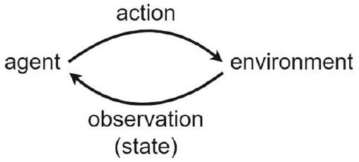
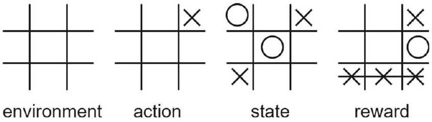
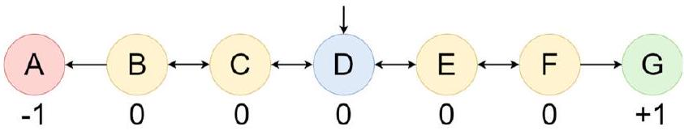
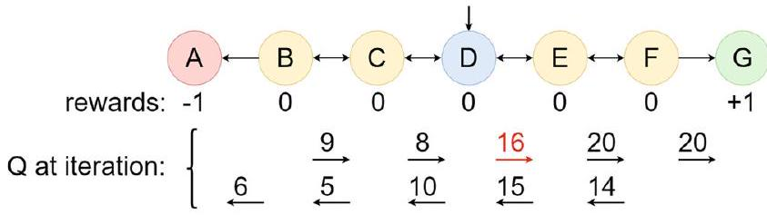
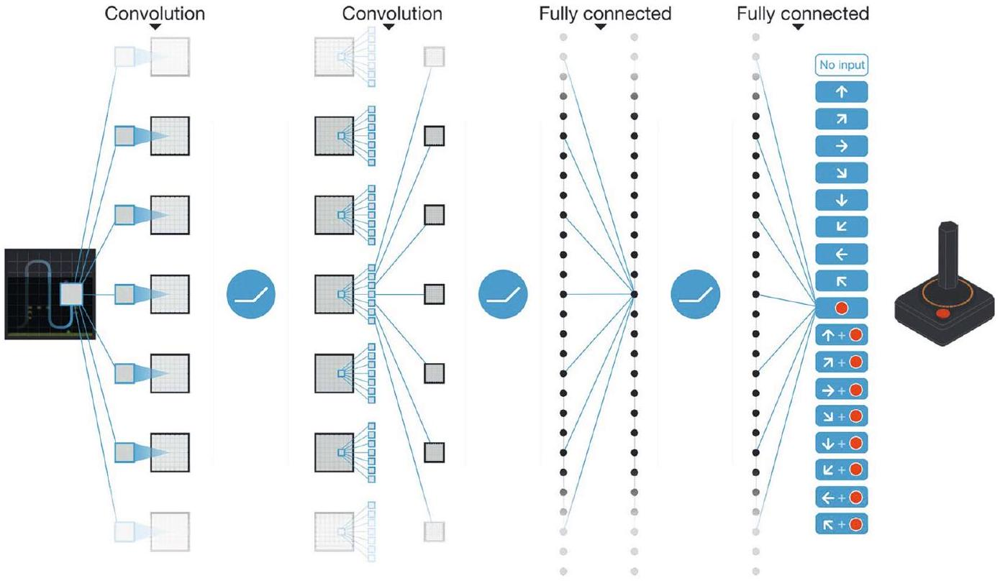
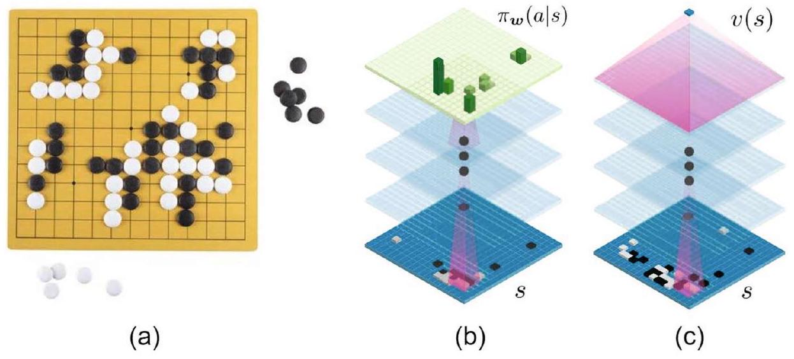

導論：訓練一隻會做決策的「數位小狗」
▼強化學習在解決什麼問題
強化學習（Reinforcement Learning, RL） 是機器學習的一個分支，核心問題是：一個（或多個）代理人（agent）在環境（environment）裡不斷採取行動，怎麼樣才能學會讓「累積獎勵」最大化。換句話說，強化學習就是「透過跟環境互動來學會做決策」。當有好幾個代理人合作，一起學習同一個環境時，這種做法叫做多代理強化學習（Multi-Agent Reinforcement Learning, MARL）。強化學習在許多產業與實務場景都有大量應用。
一個好記的類比：訓練一隻狗
強化學習很像訓練狗這件事。假設你想訓練一隻狗，你可以用「食物」當正獎勵、用「飢餓」當負獎勵，來教牠在特定情境下做出特定動作。狗就是靠這種「獎懲回饋」被訓練出來的。在強化學習裡，機器就像那隻狗——它被訓練成在環境裡的各種情境下，做出適合的行動。這個類比之所以好記，是因為它點出了強化學習最核心的機制：不是有人把「正確答案」直接告訴機器，而是機器透過「做了某個動作、得到某種回饋」，自己摸索出好的行為模式。
本章路線圖
跟著這張地圖走，你會看到強化學習從最基礎的數學骨架，一路長成能下贏世界棋王的系統：
- §2 強化學習的元素：環境、動作、狀態、獎勵——先認識強化學習的基本詞彙。
- §3 馬可夫決策過程（MDP）：強化學習背後的數學骨架。
- §4 Bellman 方程：整章、甚至整個領域最重要的一條方程式。
- §5 求解 MDP：值迭代（value iteration）與策略迭代（policy iteration）。
- §6 強化學習 vs. MDP：兩者的關鍵差異在哪裡。
- §7 時序差分（temporal difference）：一種比蒙地卡羅法更省算力的評估技巧。
- §8 Q-learning：包含 epsilon-greedy 策略、梯度 Q-learning、深度 Q 網路（DQN）。
- §9 策略梯度（policy gradient）與 REINFORCE 演算法。
- §10 AlphaGo：深度強化學習用在圍棋這個超大規模決策問題上的經典案例。
口語小結：強化學習就是讓機器像訓練小狗一樣，靠著跟環境互動、累積獎勵回饋，自己學會怎麼做決策；這一章會從最基礎的數學骨架（MDP、Bellman 方程）出發，一路講到能下贏世界棋王的 AlphaGo。

🤖 AI 生圖提示詞
WHAT（骨架）: 左右兩個方框「Agent」與「環境」，中間畫兩條方向相反的弧線箭頭形成閉環：上方棕色箭頭「動作 a」從 Agent 流向環境，下方綠色箭頭「狀態 s + 獎勵 r」從環境流回 Agent。下方另加一組訓狗小類比：狗+食物（綠色箭頭，正獎勵）、狗+空碗（紅色虛線箭頭，負獎勵）。 WHY（因果或反直覺）: 強化學習不是「環境單向告訴 agent 該怎麼做」，而是一個閉環——agent 的動作改變環境的狀態，環境的回饋（獎勵）又反過來塑造 agent 未來的動作選擇。反直覺點：很多初學者以為訓練資料是「打包好」的，但這裡的資料是 agent 自己「玩出來」的，是動態互動產生的。 MUST show（必備要素）: ① Agent 與環境兩個方框；② 動作箭頭（agent→環境）與狀態+獎勵箭頭（環境→agent），方向相反、顏色不同；③ 明確標示這是一個「迴圈」（reused loop），不是單向資料流；④ 訓狗類比：正獎勵（食物）與負獎勵（空碗）的對比。 AVOID（禁止）: 不要只畫一條單向箭頭（那樣看不出閉環）；不要放完整 LaTeX 公式字串；不要讓訓狗類比比主圖還搶眼；不要用編號圓圈列點。 STYLE: flat vector, viewBox 720×360, 琥珀棕主題（主 #b45309、深 #78350f、淺底 #fef3e2/#fffaf0），白底，Arial，紅 #e53e3e（負獎勵）、綠 #16a34a（正獎勵）為語意色，圓角、粗箭頭、無陰影無漸層。
強化學習的核心目標是什麼？
訓狗類比中，「食物」與「飢餓」分別對應強化學習的什麼概念？
當多個代理人合作、共同學習同一個環境時，這種做法稱為？
強化學習與一般監督式學習最本質的差異，根據訓狗類比可以怎麼理解？
強化學習的四大元素：環境、動作、狀態、獎勵
▼四個詞彙，構成整個強化學習的語言
強化學習由以下四個元素構成：
- 環境（Environment）：代理人所處、並與之互動的世界。
- 動作（Action）：代理人在環境中採取的行為。
- 狀態（State）：環境在某個時間點的「快照」或呈現方式。環境在每個特定時間點都會有一個狀態。
- 獎勵（Reward）：代理人採取動作後獲得的回饋。動作越好，獎勵通常越高。
這四個詞彙會貫穿整章，之後的 MDP、Bellman 方程、Q-learning 全部都是圍繞著「狀態」「動作」「獎勵」在打轉，先把這四個詞彙的意義釘牢，後面才不會混淆。
狀態可以長什麼樣子：從向量到圖片
狀態 $s$ 可以是一個向量或一個矩陣，用來代表環境的樣貌。不同問題的狀態形式差異很大：
| 問題 | 狀態的具體形式 |
|---|---|
| 井字棋（tic-tac-toe） | 9 維向量，每個元素三選一（X、O、或空格） |
| 倒單擺問題（inverted pendulum） | 4 維向量：位置、速度、角度、角速度 |
| Atari 遊戲 | 當前這一刻遊戲畫面的 RGB 圖片（frame） |
| 圍棋或西洋棋 | 一個矩陣（或攤平成向量），記錄棋盤上每一格的內容 |
具體範例：井字棋裡的四元素
用井字棋（tic-tac-toe）具體對應一次（原文 Fig. 2）：
- 環境：九宮格棋盤本身。
- 動作：在某個空格放上 X 或 O。
- 狀態：一個 9 維向量，記錄每一格目前是 X、O、還是空的。
- 獎勵：當三個 X（或三個 O）連成一條水平線或垂直線時，獲得獎勵。
這個例子雖然簡單，但完整示範了「環境／動作／狀態／獎勵」這四者是怎麼具體對應到一個真實遊戲上的——之後不管換成多複雜的問題（機器人控制、圍棋、Atari 遊戲），都是同一套四元素框架，只是狀態與動作的形式變得更複雜。
不只是玩具問題：深度強化學習的實務規模
深度強化學習雖然常常用井字棋或倒單擺這類簡單環境來示範，但到了 2025 年，它已經被應用在許多大規模的真實領域，包括機器人（robotics）、推薦系統（recommendation systems）、資源管理（resource management），以及各種複雜的大型遊戲。這說明「環境／動作／狀態／獎勵」這套簡單的四元素框架，其實具有很強的延展性，可以從九宮格一路擴展到工業級應用。
口語小結
強化學習的世界由環境、動作、狀態、獎勵四個元素構成；狀態可以簡單（井字棋的 9 維向量）也可以複雜（Atari 遊戲的整張畫面），但四元素的框架不變——這套框架小到能描述井字棋，大到能撐起機器人與推薦系統這類真實產業應用。

🤖 AI 生圖提示詞
WHAT（骨架）: 一個井字棋 3×3 棋盤實際盤面（頂列三個 X 連線、綠色虛線框住表示得獎的那一列，左中一個 O，右下一個空格用橘點標示可下棋位置），右側三個標籤方塊分別用線條指回棋盤對應位置：「狀態=整個棋盤的9維向量」「動作=在空格放X或O」「獎勵=三子連線時獲得」，底部再加一個「環境=九宮格本身」的標籤。 WHY（因果或反直覺）: RL 四元素（環境/動作/狀態/獎勵）聽起來抽象，但套到一個大家都懂的遊戲上立刻具體化——這張圖要讓讀者「秒懂」抽象定義對應到真實棋盤的哪個部分，而不是空談定義。 MUST show（必備要素）: ① 實際的井字棋盤面（含三子連線與空格）；② 三個核心標籤（狀態/動作/獎勵）各自用線條指向棋盤上對應的具體位置；③ 綠色虛線標示「連線=獎勵發生處」；④ 環境的標籤。 AVOID（禁止）: 不要只列文字定義不畫棋盤；不要放 LaTeX 公式；不要讓標籤方塊比棋盤本身更搶眼；不要用編號圓圈列點代替真正的棋盤畫面。 STYLE: flat vector, viewBox 720×360, 琥珀棕主題（主 #b45309、深 #78350f、淺底 #fef3e2/#fffaf0），白底，Arial，綠 #16a34a（獎勵）、橘 #ea580c（動作）為語意色，圓角、粗線條、無陰影無漸層。
強化學習的四大元素是？
在井字棋範例中，「狀態」對應的具體形式是？
下列哪一項正確描述了不同問題中「狀態」的具體形式？
關於深度強化學習到 2025 年的應用範圍，文中的描述是？
馬可夫性質：只看「上一步」就夠了
▼從連鎖律出發：一般情況下，機率有多複雜
考慮一組隨時間排列的隨機變數 $s_1,s_2,\ldots,s_n$（可以想成一個代理人隨時間經過的一連串狀態）。根據機率的連鎖律（chain rule），這串隨機變數的聯合機率可以寫成：
$$ \mathbb{P}(s_1,s_2,\ldots,s_n)=\mathbb{P}(s_1)\mathbb{P}(s_2\mid s_1)\mathbb{P}(s_3\mid s_2,s_1)\cdots\mathbb{P}(s_n\mid s_{n-1},\ldots,s_2,s_1). \tag{1} $$
注意到式 (1) 裡，越後面的項要條件化的「過去」越長——算到 $s_n$ 時，要考慮 $s_{n-1},\ldots,s_2,s_1$ 全部的歷史。如果狀態序列很長，這會變得非常難處理。
馬可夫性質：一個大幅簡化問題的假設
（一階）馬可夫性質（Markov property） 是一個假設：在一串隨時間排列的隨機變數 $s_1,s_2,\ldots,s_n$ 中，每個隨機變數只依賴「緊接在它前面的那一個」，不依賴更早之前的所有變數。白話講就是：要預測下一步，只需要知道「現在」，不需要知道「怎麼走到現在的」。寫成公式：
$$ \mathbb{P}(s_i\mid s_{i-1},s_{i-2},\ldots,s_2,s_1)=\mathbb{P}(s_i\mid s_{i-1}). \tag{2} $$
有了馬可夫性質，連鎖律大幅簡化
把式 (2) 代入式 (1)，原本又臭又長的連鎖律，就簡化成只需要看「相鄰兩步」的條件機率相乘：
$$ \mathbb{P}(s_1,s_2,\ldots,s_n)=\mathbb{P}(s_1)\mathbb{P}(s_2\mid s_1)\mathbb{P}(s_3\mid s_2)\cdots\mathbb{P}(s_n\mid s_{n-1}). \tag{3} $$
比較式 (1) 跟式 (3)：式 (1) 每一項的條件都越拖越長，式 (3) 每一項永遠只條件化「前一步」——這正是馬可夫性質帶來的簡化威力，也是後面 MDP（馬可夫決策過程）、Bellman 方程能夠成立的數學基礎。
馬可夫性質可以是任意階數
上面講的是一階馬可夫性質（只看前一步）。馬可夫性質其實可以是任意階數——例如二階馬可夫性質，代表一個隨機變數同時依賴「最近的」跟「次近的」兩個變數。不過，預設情況下，馬可夫性質指的就是一階，除非特別說明是幾階。
一個好記的說法
具有馬可夫性質的隨機過程，稱為馬可夫過程（Markovian process 或 Markov process）。你可以把馬可夫性質想成是一種「健忘但夠用」的假設：它假設「過去的一切影響，都已經被濃縮進了『現在』這個狀態裡」，所以不需要再往回追溯更久遠的歷史。
口語小結
一般情況下，預測未來需要考慮所有過去的歷史（連鎖律）；馬可夫性質假設「只看上一步就夠了」，把這個複雜的條件機率大幅簡化——這個看似「健忘」的假設，正是後面 MDP 與 Bellman 方程能夠成立的數學基礎。
🤖 AI 生圖提示詞
WHAT（骨架）: 左右對比兩條相同的節點鏈 s1→s2→s3→s4。左側「完整鏈式規則」：每個後面的節點都用扇形發散箭頭連回前面所有節點（s4 連回 s1、s2、s3），標「要記住全部歷史」，底部紅色警示「複雜度隨長度爆炸」。右側「Markov 簡化」：同一串節點但只有相鄰節點間的單一直線箭頭，標「只需記住上一步」，底部綠色標「複雜度大幅簡化」。 WHY（因果或反直覺）: Markov 假設把理論上要考慮「全部歷史」的複雜依賴關係，一刀砍成「只看緊鄰前一步」的簡單依賴——這不是精度上的小妥協，而是計算複雜度等級的巨大簡化，是後面整個 MDP／Bellman 方程能夠成立的地基。 MUST show（必備要素）: ① 左側扇形發散箭頭（多對一依賴）清楚呈現「要記住全部」；② 右側只有相鄰單一箭頭（一對一依賴）清楚呈現「只看上一步」；③ 兩側節點數量與排列一致，方便對比；④ 底部各自的複雜度標語（紅色警示 vs 綠色簡化）。 AVOID（禁止）: 不要放完整 LaTeX 公式字串；不要讓左右兩側節點數量或排列不同（會失去可比性）；不要用編號圓圈列點代替箭頭關係圖；不要省略「複雜度」這個因果結論標語。 STYLE: flat vector, viewBox 720×360, 琥珀棕主題（主 #b45309、深 #78350f），左側灰階 #94a3b8/#e2e8f0 對比右側綠 #16a34a/#dcfce7，白底，Arial，圓角、粗線條、無陰影無漸層。
- 拉三根滑桿設定條件機率。
- 把「完整記憶」與「Markov簡化」的 $P(s_3|\ldots)$ 滑桿設成相同值，觀察兩式結果是否一致。
- 再把兩者設成不同值，觀察差異。
一般情況下（沒有馬可夫性質），根據連鎖律，$\mathbb{P}(s_n\mid \ldots)$ 需要條件化哪些變數？
一階馬可夫性質的核心假設是什麼？
有了馬可夫性質後，式(3)相較於式(1)的關鍵簡化是什麼？
關於馬可夫性質的階數，下列敘述何者正確？
馬可夫決策過程（MDP）：把「決策」接上馬可夫性質
▼MDP 是什麼：馬可夫過程 + 決策
馬可夫決策過程（Markov Decision Process, MDP） 是一個「同時也是馬可夫過程的決策過程」。也就是說，在 MDP 裡，每一個狀態只需要條件化前一個狀態——過去所有的資訊，都被假設已經濃縮進了「前一個狀態」裡（呼應 kp3 的馬可夫性質）。
MDP 的正式定義：一個五元組
MDP 定義為一個元組 $\{S,A,R,P,\gamma\}$：
- 狀態（States）：$s\in S$
- 動作（Actions）：$a\in A$
- 獎勵（Rewards）：$r\in R$，獎勵模型 $\mathbb{P}(r_t\mid s_t,a_t)$
- 轉移模型（Transition model）：$\mathbb{P}(s_{t+1}\mid s_t,a_t)$
- 折扣因子（Discount factor）：$\gamma\in[0,1]$
- $\gamma\lt 1$：discounted（有折扣）；$\gamma=1$：undiscounted（無折扣）
- 折扣後的獎勵總和：$r_0+\gamma r_1+\gamma^2r_2+\cdots$
在每個時間點 $t\in\{0,1,2,\ldots\}$，代理人處於某個狀態 $s_t\in S$，採取動作 $a_t\in A$。採取這個動作後，代理人依轉移模型 $s_{t+1}\sim\mathbb{P}(s_{t+1}\mid s_t,a_t)$ 移動到新狀態，並依獎勵模型 $r_t\sim\mathbb{P}(r_t\mid s_t,a_t)$ 獲得獎勵。
為什麼需要「horizon」跟「折扣因子」
MDP 通常不只考慮「當下這一步」的獎勵，還會考慮未來一段時間（稱為 horizon，時間範圍 $h$）的總獎勵。也就是說，除了眼前的短期獎勵，未來的總獎勵同樣重要——有時候犧牲眼前的獎勵，換取更大的長期獎勵，反而是更好的策略。經典例子：下西洋棋時，玩家可能犧牲皇后，換取幾步之後的勝利。
但考慮整個 horizon 的獎勵時，不應該平等看待每一步的獎勵——這就是折扣因子 $\gamma\in[0,1]$ 存在的原因。代理人獲得的是折扣後的總獎勵 $r_0+\gamma r_1+\gamma^2r_2+\cdots$（$r_0$ 是當下獎勵，$r_i$ 是第 $i$ 步之後的獎勵）。之所以要打折扣，是因為近期的獎勵（如 $r_0,r_1$）通常比遙遠未來的獎勵（如 $r_{1000}$）更值得重視。$\gamma\lt 1$ 時獎勵是打折的，$\gamma=1$ 時獎勵完全不打折。
數值直覺：折扣因子怎麼影響總獎勵
假設每一步獎勵都固定是 1，看不同 $\gamma$ 下，折扣總和累積到多快就「差不多打住」：
| $\gamma$ | $r_0+\gamma r_1+\gamma^2r_2+\cdots$（前幾項） | 直覺 |
|---|---|---|
| $\gamma=1$（無折扣） | $1+1+1+1+\cdots$ | 每一步都同等重要，長期獎勵完全不打折 |
| $\gamma=0.9$ | $1+0.9+0.81+0.729+\cdots$ | 越遠的獎勵貢獻越小，但仍看得到中期影響 |
| $\gamma=0.5$ | $1+0.5+0.25+0.125+\cdots$ | 幾步之後幾乎只看眼前，非常短視 |
$\gamma$ 越接近 1，代理人越「有遠見」；$\gamma$ 越接近 0，代理人越「短視近利」——這是 MDP 裡調整「眼光遠近」的一個關鍵旋鈕。
口語小結
MDP 用五元組 $\{S,A,R,P,\gamma\}$ 完整定義了一個決策問題：狀態與動作構成骨架，轉移模型與獎勵模型描述「做了這個動作會發生什麼」，折扣因子 $\gamma$ 則決定代理人該多重視「眼前」還是「未來」——這正是為什麼有時候犧牲眼前小利、換取長期大局是划算的。
🤖 AI 生圖提示詞
WHAT（骨架）: 上半部一條時間軸狀態鏈 st→st+1→st+2→...，箭頭上標「依機率 P(s'|s,a) 跳轉」與各步獎勵 r0,r1,r2。下半部一組遞減長條圖，代表 r0, γr1, γ²r2, γ³r3, γ⁴r4，長條高度依次遞減（指數衰減曲線的視覺化），標示「γ 越小衰減越快」。 WHY（因果或反直覺）: MDP 裡未來獎勵不是「平等對待」的——越遠的獎勵權重呈指數遞減，這是折扣因子 γ 的核心作用。反直覺點：即使未來有一個很大的獎勵，如果 γ 夠小，它在「現在」的價值可能被壓得很低，這解釋了為什麼有時要犧牲眼前小獎勵換長期大獎勵時，折扣因子的選擇會大幅影響決策。 MUST show（必備要素）: ① 時間軸狀態鏈與跳轉箭頭（標示機率性跳轉，非確定性）；② 每步的獎勵標籤；③ 遞減長條圖，清楚呈現指數衰減趨勢；④ 「γ 越小衰減越快」的因果標語。 AVOID（禁止）: 不要放完整 LaTeX 公式字串；不要把跳轉箭頭畫成單一路徑（要暗示「有機率」的不確定性，可用箭頭旁標注「機率跳轉」文字提示）；不要讓長條圖高度看起來是線性遞減而非指數遞減；不要用編號圓圈列點。 STYLE: flat vector, viewBox 720×380, 琥珀棕主題（主 #b45309、深 #78350f、淺底 #fef3e2/#fffaf0），白底，Arial，長條圖用綠色系遞減飽和度（#16a34a→#dcfce7）表示遞減權重，圓角、粗線條、無陰影無漸層。
- 拉 γ 滑桿：越小衰減越快。
- 拉 h 滑桿：看更長的 horizon。
MDP 被定義為哪一個元組？
折扣因子 $\gamma$ 存在的主要原因是什麼？
下西洋棋犧牲皇后換取後續勝利的例子，說明了 MDP 的什麼概念？
關於折扣因子 $\gamma$ 的數值意義，下列敘述何者正確？
策略（Policy）：從狀態到動作的那條映射
▼Policy 的定義：狀態該對應什麼動作
策略（policy）$\pi$ 是一個從狀態映射到動作的函數：
$$ \pi:S\to A,\quad \pi:s\mapsto a. \tag{4} $$
白話講，policy 就是一套「規則書」：告訴代理人在環境的每一個狀態下，應該採取什麼動作。因為 policy 本質上就是「狀態到動作」的映射，所以某種意義上，policy 就等於動作本身——只要你知道當前狀態、又知道 policy，你就自動知道該採取什麼動作了。
兩種 Policy：決定性 vs 隨機性
Policy 可以是決定性（deterministic）的：
$$ a_t=\pi(s_t), \tag{5} $$
也就是說，給定一個狀態 $s_t$，policy 永遠輸出同一個固定的動作 $a_t$——沒有隨機性。
Policy 也可以是隨機性（stochastic）的：
$$ a_t=\pi(a_t\mid s_t). \tag{6} $$
這裡 policy 輸出的是一個條件機率分布——給定狀態 $s_t$，各個動作被選中的機率各是多少，然後代理人依這個機率分布隨機抽一個動作。決定性 policy 就像「看紅燈永遠停下」這種固定規則；隨機性 policy 則像「看紅燈九成機率停下、一成機率闖過去」這種帶有隨機成分的規則。
MDP 的終極目標：找到最優 Policy
MDP 這整套框架，說到底就是為了一件事：找到一個能讓長期獎勵最大化的最優策略 $\pi^*$：
$$ \pi^*=\arg\max_\pi\sum_{t=0}^h\gamma^t\mathbb{E}_\pi[r_t]. \tag{7} $$
拆解這條式子：
- $\sum_{t=0}^h\gamma^t\mathbb{E}_\pi[r_t]$：在 horizon $h$ 之內，把每一步的期望獎勵 $\mathbb{E}_\pi[r_t]$ 乘上折扣因子 $\gamma^t$（呼應 kp4），再全部加總——這就是某個 policy $\pi$ 能帶來的「總期望折扣獎勵」。
- $\arg\max_\pi$：在所有可能的 policy 裡，找出能讓這個總和最大的那一個，就是最優策略 $\pi^*$。
也就是說，整個 MDP（乃至於整個強化學習）的目標，可以濃縮成這一行式子：在所有策略裡，找出能讓期望折扣獎勵總和最大化的那一個。這條式子會在後面的 kp6（Bellman 方程）、kp7-kp9（值迭代/策略迭代）反覆被具體化成可以實際計算的演算法。
口語小結
Policy 是「狀態該做什麼動作」的規則書，可以是死板的決定性規則，也可以是帶隨機性的機率分布；MDP 的終極目標，就是在所有可能的規則書裡，找出能讓長期折扣獎勵總和最大的那一本——這正是式(7)這行看似抽象的算式想表達的全部意義。
🤖 AI 生圖提示詞
WHAT（骨架）: 左右對比兩個「狀態→動作」映射。左側「決定性 policy」：一個狀態圓圈只有一條粗黑箭頭指向唯一一個動作方框，標「非黑即白」。右側「隨機性 policy」：同一個狀態圓圈有三條不同粗細的箭頭分別指向三個動作方框，箭頭粗細對應標示的機率百分比（如60%/30%/10%），標「箭頭粗細＝機率大小」。 WHY（因果或反直覺）: 決定性 policy 面對同一個狀態永遠做同一個決定；隨機性 policy 則是用一整組機率分佈表達「傾向」而非「唯一解」——反直覺點：隨機性 policy 不是「亂猜」，而是有結構的機率權重，這種平滑、可微分的表達方式反而更適合用梯度方法學習，尤其在連續動作空間中更是必要。 MUST show（必備要素）: ① 左側單一粗箭頭（決定性，非黑即白）；② 右側多條不同粗細箭頭配上機率標籤（隨機性，機率分佈）；③ 箭頭粗細要有明顯視覺差異對應機率大小；④ 底部一句話點出「非黑即白 vs 機率傾向」的核心差異。 AVOID（禁止）: 不要放完整 LaTeX 公式字串；不要讓右側箭頭粗細看不出差異（那就失去了視覺意義）；不要用編號圓圈列點代替箭頭圖；不要讓左右兩側視覺風格差異過大（要能一眼看出這是同一種「狀態→動作」映射的兩種變體）。 STYLE: flat vector, viewBox 720×340, 琥珀棕主題（主 #b45309、深 #78350f），左側灰藍中性色 #64748b/#dbeafe，右側琥珀色 #b45309/#fde68a，白底，Arial，圓角、粗線條、無陰影無漸層。
- 點按鈕切換決定性／隨機性模式。
- 隨機性模式下拉 P(right) 滑桿。
式 (4) 中，policy $\pi:S\to A$ 代表什麼？
決定性 policy（式5）與隨機性 policy（式6）的差異是？
式 (7) 中 $\pi^*=\arg\max_\pi\sum_{t=0}^h\gamma^t\mathbb{E}_\pi[r_t]$ 代表的是？
為什麼說「policy 本質上就代表了動作」？
Bellman 方程：從終點往回推的價值遞迴式
▼Value 是什麼：把「好壞」換算成一個數字
Value（值） 的定義很直接：agent 在某個狀態下，能拿到的最大／最好的累積獎勵。value 本質上就是「獎勵的量化」——它回答「這個狀態值多少分」這個問題。狀態 $s_t$ 在時間 $t$ 的 value，記為 $v(s_t)$ 或 $v_t(s)$。
從 horizon 的最後一步開始往回推
假設我們只看一段有限的時間範圍（horizon）$h$。最後一個時間點 $t$ 的 value 最簡單：既然遊戲要結束了，直接選當下能拿到最大獎勵的動作就好，沒有未來可以考慮：
$$ v(s_t)=\max_{a_t} r(s_t,a_t). $$
倒數第二步（時間 $t-1$）就不一樣了——這一步做的選擇，會影響下一步能拿到多少 value，所以要把「現在的獎勵」加上「未來狀態的 value（打折後）」：
$$ v(s_{t-1})=\max_{a_{t-1}} r(s_{t-1},a_{t-1})+\gamma\,\mathbb{P}(s_t\mid s_{t-1},a_{t-1})\,v(s_t). $$
倒數第三步同樣道理：
$$ v(s_{t-2})=\max_{a_{t-2}} r(s_{t-2},a_{t-2})+\gamma\,\mathbb{P}(s_{t-1}\mid s_{t-2},a_{t-2})\,v(s_{t-1}). $$
通式：Bellman 方程
把這個「往回推」的規律寫成一般式，就得到了Bellman 方程（式8）：
$$ v(s_t)=\max_{a_t} r(s_t,a_t)+\gamma\sum_{s_{t+1}}\mathbb{P}(s_{t+1}\mid s_t,a_t)\,v(s_{t+1}). \tag{8} $$
白話講：「這一步的價值」＝「當下最好能拿到的獎勵」加上「打折後、對所有可能下一狀態取期望的未來價值」。這裡的 $\sum_{s_{t+1}}\mathbb{P}(s_{t+1}\mid s_t,a_t)v(s_{t+1})$ 就是「對下一狀態的 value 取期望值」，因為轉移到哪個狀態是機率性的，不能只看一種可能。
Bellman 方程是整個 MDP 與強化學習領域最重要的方程——後面幾乎所有演算法（值迭代、策略迭代、Q-learning……）都是從這條方程直接推導或變形出來的。
換一種記號：拿掉下標，改用一撇
文獻裡常常不寫 $s_t,s_{t+1}$ 這種下標，而是用 $s$（現在）跟 $s'$（下一步）表示，Bellman 方程也可以寫成（式9）：
$$ v(s)=\max_a r(s,a)+\gamma\sum_{s'}\mathbb{P}(s'\mid s,a)\,v(s'). \tag{9} $$
也常常在 value 上加一個上標 $\pi$（如 $v^\pi(s)$），表示這個 value 是跟某個特定 policy $\pi$ 綁定的。用期望值的形式改寫（式10）：
$$ v(s)=\mathbb{E}[r\mid s,\pi(s)]+\gamma\sum_{s'}\mathbb{P}(s'\mid s,\pi(s))\,v(s'), \tag{10} $$
其中 $\pi(s)=a$（也就是說，policy 決定了在狀態 $s$ 要採取哪個動作 $a$）。式(9)裡的 $\max_a$ 是「找最好的動作」，式(10)則假設動作已經由 policy $\pi$ 決定好了——這是「求最優」跟「評估一個給定 policy 好不好」這兩件事的差別，後面 kp8（策略迭代）會用到這個區別。
口語復盤
Bellman 方程的精神就是「往回推」：從最後一步的「近視」決策（只看眼前獎勵），一路往回加上「未來的打折 value」，變成一條遞迴式——這是整個強化學習理論的地基，後面的值迭代、策略迭代、Q-learning 全部都是這條方程的具體應用或變形。
🤖 AI 生圖提示詞
WHAT（骨架）: 一條時間軸上三個節點（t、t−1、t−2，右到左排列），每個節點下方一個小標籤框顯示該時間點的值定義。節點之間畫弧形箭頭，從右邊節點指向左邊節點，代表「右邊算好的值折扣後流回左邊」。 WHY（因果或反直覺）: Bellman 方程的值不是一次算出來的，而是從 horizon 的終點開始，先算出最後一格的值（只有即時獎勵），再往前一格一格遞迴累加折扣後的未來值。反直覺點：要算「現在」的值，必須先知道「未來」已經算好的值——順序是反著推的。 MUST show（必備要素）: ① 三個時間節點 t、t−1、t−2 由右到左排列；② 右邊節點標「v(sₜ)=max 即時獎勵」（沒有未來項，因為是終點）；③ 中間與左邊節點標「獎勵 + γ·前一格已算出的值」；④ 弧形箭頭從右指向左，顯示遞迴依賴方向；⑤ 底部文字點出「先算終點、再往回推」的反直覺順序。 AVOID（禁止）: 不要把箭頭方向畫反（不能是從左指向右，那樣會誤導成時間正向流動）；不要放完整 LaTeX 公式字串；不要用方框把名詞框起來卻無箭頭因果關係；不要省略「這是從終點往回算」的視覺提示。 STYLE: flat vector, viewBox 720×360, amber 主題（主 #b45309、深 #78350f、淺底 #fef3e2/#fffaf0），白底，Arial，綠色箭頭 #16a34a 表示遞迴流向，橘色 #ea580c 點題文字，圓角、粗線條、無陰影無漸層。
- 拉動 4 個獎勵滑桿與折扣因子 γ。
- 觀察 readout 中 t=2 → t=1 → t=0 的計算順序，t=1 的計算會用到 t=2 剛算出的值。
Bellman 方程中，$\gamma\sum_{s'}\mathbb{P}(s'\mid s,a)v(s')$ 這一項代表什麼？
Bellman 方程的推導邏輯，是從 horizon 的哪一端開始往回推？
式 (9) 與式 (10) 的主要差異是什麼？
為什麼說 Bellman 方程是強化學習領域最重要的方程？
值迭代：從尾端往前一輪一輪算出最優值
▼解 MDP 的目標：找到最優 policy
回顧 kp5，MDP 的目標是找出最優 policy $\pi^*$。解 MDP 主要有兩條路：值迭代（value iteration） 與策略迭代（policy iteration，kp8 會講）。這裡先講值迭代。
值迭代：直接套用 Bellman 方程，一輪一輪往前算
值迭代的做法很直接——就是把 kp6 的 Bellman 方程拿來反覆套用，從 horizon 最後一步往前，一步一步算出每個時間點的最優 value（式11）：
$$ t=0:\quad v_0^*\leftarrow\max_a r(s,a),\ \forall s $$ $$ t\gt 0:\quad v_t^*(s)\leftarrow\max_a r(s,a)+\gamma\sum_{s'}\mathbb{P}(s'\mid s,a)\,v_{t-1}^*(s'),\ \forall s,t \tag{11} $$
Algorithm 1（值迭代）流程：
- 先算 $t=0$ 時每個狀態的初始最優值 $v_0^*(s)=\max_a r(s,a)$。
- 對 $t$ 從 1 到 $h$（horizon），用上一輪算出的 $v_{t-1}^*$ 代入 Bellman 方程，算出這一輪的 $v_t^*(s)$。
- 迭代結束後回傳 $v_h^*$。
要注意，這裡的下標 $t$ 不完全是「真實時間」，而更像是「距離 horizon 終點還有幾步」在做迭代——每多迭代一輪，就相當於把「未來能看多遠」再往前推一步。
算出最優值之後：反推最優 policy
拿到每一輪的最優 value 之後，最優 policy 就是「在每個狀態挑出讓 value 最大的那個動作」（式12）：
$$ t=0:\quad \pi_0^*(s)\leftarrow\arg\max_a r(s,a),\ \forall s $$ $$ t\gt 0:\quad \pi_t^*(s)\leftarrow\arg\max_a r(s,a)+\gamma\sum_{s'}\mathbb{P}(s'\mid s,a)\,v_{t-1}^*(s'),\ \forall s \tag{12} $$
注意式(11)用 $\max$（要的是「最大值是多少」）、式(12)用 $\arg\max$（要的是「哪個動作能達到最大值」）——這是兩個相關但不同的問題：一個問「多好」，一個問「怎麼做」。
反直覺的地方：最優 policy 是會隨時間變的（non-stationary）
從式(12)可以看出一件容易被忽略的事：$\pi_t^*(s)$ 帶了下標 $t$——也就是說，同一個狀態 $s$，在 horizon 裡不同的時間點，最優動作可能不一樣！這叫做非穩態（non-stationary）的最優 policy。直覺上想：如果你只剩最後一步可以走，你的決策考量（只看眼前）跟你還有很長時間可以走（要考慮長遠布局）當然不會一樣——這正是為什麼最優 policy 會隨著「還剩多少步」而改變。
口語復盤
值迭代就是把 Bellman 方程當作一個更新規則，從 horizon 尾端往前，一輪一輪把每個狀態的最優 value 算出來；算完 value 後，最優 policy 直接從「哪個動作讓 value 最大」反推出來——但因為每一輪用的是「還剩幾步」的 value，算出來的最優 policy 會隨時間變化，不是一個固定不變的策略。
🤖 AI 生圖提示詞
WHAT（骨架）: 一個網格，橫軸是時間 t=0,1,2,3，縱軸是三個狀態 s1,s2,s3，每格用顏色深淺表示該狀態在該時間層的值大小（顏色隨 t 增加而加深）。欄與欄之間畫箭頭，指出後一欄靠前一欄算出來。 WHY（因果或反直覺）: 值迭代不是一次算出最終答案，而是從 t=0（只看即時獎勵）開始，逐一時間層往前推進，每一層的值都依賴上一層剛算出的值，值隨著層數增加越來越精確地逼近最優。 MUST show（必備要素）: ① 網格的橫軸時間、縱軸狀態；② 顏色深淺隨 t 增加而加深，表示值被精煉；③ 欄與欄之間的箭頭，清楚指出依賴方向（左→右，後一欄靠前一欄）；④ 底部文字標「t=0只看即時獎勵，t越大納入越多層未來獎勵」；⑤ 反直覺提示「不是一次算完，是逐層疊代」。 AVOID（禁止）: 不要讓箭頭方向不明確或雙向；不要放完整 LaTeX 公式字串；不要把格子畫成純裝飾（每格顏色必須有意義地隨迭代加深）；不要省略「逐層依賴」這個因果標示。 STYLE: flat vector, viewBox 720×360, amber 主題（主 #b45309、深 #78350f、淺底 #fef3e2/#fffaf0），白底，Arial，格子用橘色系漸層深淺（#fed7aa→#ea580c）表示迭代精煉程度，綠色箭頭 #16a34a 標示依賴方向，圓角、粗線條、無陰影無漸層。
- 拉動獎勵與折扣滑桿設定環境。
- 按「值迭代一步」重複多次，觀察折線圖與數值收斂。
值迭代算法的核心操作是什麼？
式 (11) 與式 (12) 的差異在於？
值迭代求出的最優 policy $\pi_t^*$ 為什麼被稱為「非穩態」（non-stationary）？
策略迭代：評估好壞、改善策略，兩步交替直到收斂
▼另一條解 MDP 的路：先有一個 policy，再慢慢改善它
值迭代（kp7）是先算出最優 value，再反推最優 policy。策略迭代（policy iteration） 走一條不同的路：先隨便給一個 policy，然後反覆評估它、改善它，直到收斂到最優。這是一種交替最佳化（alternating optimization）的思路——兩個步驟輪流做，各自把對方固定住、只優化自己那一部分。
步驟一：Policy Evaluation（評估目前的 policy 有多好）
給定一個 policy $\pi$，先算出它的 value（也就是「照著這個 policy 走，期望能拿到多少獎勵」）：
$$ v^\pi(s)\leftarrow r(s,\pi(s))+\gamma\sum_{s'}\mathbb{P}(s'\mid s,\pi(s))\,v^\pi(s'),\ \forall s \tag{13} $$
注意這個式子跟 kp6 的式(10)幾乎一模一樣——因為它本來就是 Bellman 方程的一種特例，只是這裡動作已經由 policy $\pi(s)$ 決定了，不需要再 $\max$。這一步只是評分，不改變 policy 本身。
步驟二：Policy Improvement（用評分結果改善 policy）
評估完之後，換個角度：在每個狀態，看看有沒有比目前 policy 選的動作更好的動作，如果有就換過去（式14）：
$$ \pi(s)\leftarrow\arg\max_a r(s,a)+\gamma\sum_{s'}\mathbb{P}(s'\mid s,a)\,v^\pi(s'),\ \forall s \tag{14} $$
這一步反過來：用剛剛算出來的 value 當作參考，挑出能讓 value 最大的動作，更新 policy。
兩式的共同根源：式(13)、式(14) 都是從 Bellman 方程推導出來的——差別只在於，evaluation 把「動作」直接換成「policy 決定的動作」$\pi(s)$（不用 $\max$，因為動作已經固定），improvement 則保留 $\arg\max$（在找更好的動作）。
Algorithm 2：兩步驟交替直到收斂
Algorithm 2（策略迭代）：
- 初始化：每個狀態隨機給一個動作當初始 policy $\pi(s)$。
- 重複直到收斂：
- Policy evaluation（式13）：算出目前 policy 的 value $v^\pi(s)$。
- Policy improvement（式14）：用算出的 value 更新 policy。
- 回傳收斂後的 $v^\pi(s)$ 與 $\pi(s)$。
口語小結：值迭代 vs 策略迭代
| 值迭代 | 策略迭代 | |
|---|---|---|
| 核心動作 | 直接反覆算最優 value | 評估目前 policy → 改善 policy，交替進行 |
| 何時決定 policy | 算完所有 value 後，最後才反推 | 每一輪都會更新 policy |
| 直覺 | 「先想清楚每個狀態值多少分，再決定怎麼走」 | 「先隨便走走看，邊走邊修正路線」 |
口語復盤
策略迭代靠兩個步驟輪流進行收斂：evaluation 幫目前的 policy 打分數（这一步固定 policy、算它的 value），improvement 拿分數去找更好的動作（這一步固定 value、去更新 policy）——兩者都源自 Bellman 方程，只是分別在「求值」與「求策略」上各自最佳化一次，交替反覆直到不再改變為止。
🤖 AI 生圖提示詞
WHAT（骨架）: 兩個方框「策略評估」與「策略改善」，中間用一對彎曲箭頭首尾相連成循環（評估→改善、改善→評估），循環外側再畫一條虛線分岔箭頭通往「收斂」標記（一個綠色勾勾或圓點）。 WHY（因果或反直覺）: 策略迭代不是單一步驟一次算出最優解，而是「評估目前策略多好」與「根據評估結果挑更好動作」這兩步反覆循環拉扯，直到策略不再改變才停止。 MUST show（必備要素）: ① 兩個方框並清楚標示各自的角色（評估算 v^π、改善用 argmax 選動作）；② 循環雙箭頭清楚連接兩者形成閉環；③ 一條分岔虛線箭頭通往「收斂」出口；④ 底部文字點出「兩步反覆拉扯直到穩定」與「兩步都源自同一個 Bellman 方程」。 AVOID（禁止）: 不要只畫單向箭頭（必須形成閉環循環）；不要放完整 LaTeX 公式字串；不要省略收斂出口；不要讓兩個方框看起來互不相關（要有清楚的循環連接）。 STYLE: flat vector, viewBox 720×360, amber 主題（主 #b45309、深 #78350f、淺底 #fef3e2/#fffaf0），白底，Arial，綠色循環箭頭 #16a34a，橘色收斂虛線箭頭 #ea580c，圓角、粗線條、無陰影無漸層。
- 交替點擊「策略評估一步」與「策略改善一步」。
- 觀察 policy 是否穩定不再改變。
策略迭代中的 Policy Evaluation 步驟（式13）在做什麼？
Policy Evaluation（式13）與 Policy Improvement（式14）的共同數學根源是什麼？
值迭代與策略迭代最核心的思路差異是？
修改版策略迭代：值迭代與策略迭代的務實折衷
▼重新對比值迭代與策略迭代的節奏
kp7（值迭代）與 kp8（策略迭代）雖然都在解 MDP，但兩者「evaluation 做幾次、improvement 做幾次」的節奏完全不同：
- 值迭代：policy evaluation（其實就是反覆套 Bellman 方程算 value）在整個 horizon 裡重複做很多次，但 policy improvement（反推 policy）只在最後做一次。
- 策略迭代：policy evaluation 與 policy improvement 交替反覆進行，兩者都不斷重複，直到收斂。
用複雜度把這個差異講清楚
兩種方法每一輪迭代的時間複雜度不同：
- 值迭代：$\mathcal{O}(|S|^2|A|)$
- 策略迭代：$\mathcal{O}(|S|^3+|S|^2|A|)$
（其中 $|S|$ 是狀態數、$|A|$ 是動作數。）策略迭代每輪要多做一次 $|S|^3$ 量級的計算（求解 policy evaluation 那組線性方程），比值迭代貴。
但反過來看收斂所需的迭代次數：
- 值迭代：線性收斂（linear convergence，需要的迭代次數較多）
- 策略迭代：二次收斂（quadratic convergence，收斂更快、需要的迭代次數較少）
這就是一個典型的取捨（trade-off）：值迭代每一輪算得便宜，但要跑很多輪；策略迭代每一輪算得貴，但跑很少輪就會收斂。哪個總體比較快，要看實際問題的規模（$|S|,|A|$ 大小）。
折衷方案：Modified Policy Iteration
修改版策略迭代（Modified Policy Iteration）想把兩者的優點結合起來：架構上跟策略迭代很像（有明確的 policy、evaluation/improvement 交替），但policy evaluation 這一步不是只做一次，而是重複做 $k$ 次（這個「重複做多次」的想法就是跟值迭代借來的靈感）：
Algorithm 3（修改版策略迭代）：
- 初始化：每個狀態隨機給一個動作當初始 policy。
- 重複直到收斂：
- 重複 $k$ 次：Policy evaluation（式13），更新 $v^\pi(s)$。
- Policy improvement（式14）一次，更新 policy。
- 回傳收斂後的 $v^\pi(s)$ 與 $\pi(s)$。
參數 $k$ 就是這個折衷方案的旋鈕：$k=1$ 時很接近策略迭代的節奏（evaluation 做一次就 improve）；$k$ 很大時很接近值迭代（evaluation 做很多次才 improve 一次）。實務上，修改版策略迭代通常比純值迭代或純策略迭代都收斂得更快，是比較實用的做法。
口語小結
| 方法 | Evaluation 做幾次才 Improve 一次 | 每輪複雜度 | 收斂速度 |
|---|---|---|---|
| 值迭代 | 一直做到 horizon 結束才反推 policy | 便宜 $\mathcal{O}(\|S\|^2\|A\|)$ | 線性（較慢） |
| 策略迭代 | 1 次 | 貴 $\mathcal{O}(\|S\|^3+\|S\|^2\|A\|)$ | 二次（較快） |
| 修改版策略迭代 | $k$ 次（可調） | 介於兩者之間 | 實務上通常最快 |
（值迭代與修改版策略迭代都存在近似變體，供大規模問題使用。）
口語復盤
值迭代便宜但要跑很多輪，策略迭代貴但收斂快——修改版策略迭代用一個可調參數 $k$ 卡在中間，讓 policy evaluation 重複做 $k$ 次才 improve 一次，實務上往往比兩個極端都更快收斂，是更常被實際使用的版本。
🤖 AI 生圖提示詞
WHAT（骨架）: 一個「計算量 vs 迭代次數」的座標圖，畫三條收斂曲線：值迭代（很多小台階，藍色，緩慢下降到右側）、策略迭代（少數大跳躍，紅色，快速但每步很貴）、修改版策略迭代（中等步伐，綠色，整體最快抵達收斂，用勾勾標記終點）。 WHY（因果或反直覺）: 三種方法在「每次迭代的計算成本」與「達到收斂所需的迭代次數」之間做不同權衡；反直覺點是「每次算得快」（值迭代）不代表整體最省時間，「每次算得準」（策略迭代）也不代表最快收斂——修改版策略迭代取兩者折衷反而實務上常常最快。 MUST show（必備要素）: ① 三條不同顏色、不同步伐大小的曲線；② 值迭代標「很多小步：算得快但要很多次」；③ 策略迭代標「少數大步：算得慢但次數少」；④ 修改版策略迭代標「折衷，實務通常最快到底」並用勾勾/圓點標記終點；⑤ 底部反直覺文字。 AVOID（禁止）: 不要讓三條線的步伐大小看起來一樣（必須明顯區分小步/大步/中步）；不要放完整 LaTeX 公式字串；不要漏標哪條線代表哪個方法；不要讓「修改版」看起來不是贏家。 STYLE: flat vector, viewBox 720×360, amber 主題背景與標題（主 #b45309、深 #78350f），白底，Arial，三條比較線各用藍 #2563eb／紅 #dc2626／綠 #16a34a 區分，圓角、粗線條、無陰影無漸層。
- 拉 k 滑桿看修改版在不同設定下的表現。
- 拉衰減率與誤差門檻看設定如何影響三者排名。
值迭代與策略迭代在「evaluation 與 improvement 的節奏」上的差異是？
關於值迭代與策略迭代的複雜度與收斂速度，下列敘述何者正確？
修改版策略迭代（Algorithm 3）中的參數 $k$ 代表什麼？
從 MDP 到強化學習：轉移模型未知的世界
▼一個關鍵假設被拿掉：轉移模型不再已知
到目前為止（kp4–kp9）討論的都是 MDP——而 MDP 有一個重要的前提：轉移模型 $\mathbb{P}(s'\mid s,a)$ 是已知的。值迭代、策略迭代都直接用到這個轉移機率去算期望值。
強化學習（Reinforcement Learning, RL）跟 MDP 幾乎一樣，唯一的關鍵差異是：轉移模型是未知的。這聽起來只是拿掉一個假設，但影響很大——這其實更貼近真實世界：在大多數實際應用裡，你根本不知道「在某個狀態做某個動作後，環境會以什麼機率跳到哪個新狀態」，你只能透過跟環境互動、觀察結果來慢慢摸索。因此，RL 是一個比 MDP 更具挑戰性、但也更實用的任務。
RL 的正式定義：少了一項的元組
RL 一樣定義成一個元組 $\{S,A,R,P,\gamma\}$，跟 MDP 列的元素一樣：
- 狀態：$s\in S$
- 動作：$a\in A$
- 獎勵：$r\in R$，獎勵模型 $\mathbb{P}(r_t\mid s_t,a_t)$
- 折扣因子：$\gamma\in[0,1]$（折扣獎勵 $r_0+\gamma r_1+\gamma^2 r_2+\cdots$）
差別在於：轉移模型 $P$ 不再是一個「拿來直接用」的已知輸入，而是要透過跟環境互動才能（隱含地）掌握的東西。RL 的目標跟 MDP 一樣：找到最優 policy。
兩條解法路線：Model-based vs Model-free
既然轉移模型未知，解 RL 問題主要有兩種思路：
- Model-based RL（基於模型）：先想辦法把轉移模型和獎勵模型學出來，學完之後再套用 kp7/kp8 那套值迭代／策略迭代去解問題。有些機器人應用會這樣做——例如手動把機械手臂移到不同狀態，記錄結果，藉此校準模型。
- Model-free RL（不基於模型）：完全不去顯式地學轉移模型或獎勵模型，而是讓 policy（或 value/Q function）隱含地從跟環境互動的經驗中學出來，不需要明確寫出「轉移機率是多少」這種公式。
本章後續的重點會放在 model-free 強化學習演算法——這是深度強化學習裡最常見、也是後面 Q-learning、DQN、policy gradient 等演算法所屬的路線。
之後會反覆用到的例子：鏈式遊戲
原文 Fig. 3 介紹了一個貫穿後面好幾節的簡單例子：一條「鏈式遊戲」，從節點 D 出發，每一步可以選擇往左或往右移動。遊戲在到達節點 A（輸，獎勵 $-1$）或節點 G（贏，獎勵 $+1$）時結束，其餘節點的獎勵都是 0。這個例子看似簡單，但足以具體示範 kp11（蒙地卡羅評估）、kp12（時序差分評估）、kp16（Q-learning 範例）要講的演算法怎麼運作——後面每次提到「鏈式遊戲」，指的都是這個設定。
口語復盤
RL 跟 MDP 的差別只有一點，但影響巨大：轉移模型未知。這讓「解題」從「代公式算」變成「要跟環境互動、從經驗中學」；解法分成先學模型再解題的 model-based，跟完全不學模型、直接從經驗學 policy 的 model-free——本章後面聚焦的是 model-free 這條路線，並會反覆用一個簡單的鏈式遊戲當具體例子。

🤖 AI 生圖提示詞
WHAT（骨架）: 左右對比兩個面板。左「MDP」：agent 與環境方框之間有清楚的實線雙向箭頭，標示「P(s'|s,a) 已知」。右「強化學習」：一樣的 agent 與環境方框，但中間的箭頭是虛線並蓋著一個問號圓圈，標示轉移模型未知。 WHY（因果或反直覺）: MDP 與強化學習的結構幾乎完全一樣（都是 agent 在環境中互動），唯一的差異是「轉移模型是否已知」；反直覺點：就這麼一個小差異，卻逼得下半章必須發展出完全不同的一套方法（時序差分、Q-learning）才能解決問題。 MUST show（必備要素）: ① 左右對稱的 agent-環境方框結構；② 左側箭頭是實線並標「已知」；③ 右側箭頭是虛線並疊加問號圖示，標「未知」；④ 左側標「可直接用值迭代/策略迭代精確求解」；⑤ 右側標「必須靠試誤摸索」；⑥ 底部反直覺文字點出「結構一樣，一個差異全盤改變解法」。 AVOID（禁止）: 不要讓左右兩邊結構明顯不同（除了箭頭已知/未知的差異，其餘應該對稱）；不要放完整 LaTeX 公式字串；不要省略問號圖示；不要讓兩邊看起來毫無關聯。 STYLE: flat vector, viewBox 720×360, 左側藍色系（#2563eb/#1e40af/#dbeafe）代表MDP已知，右側橘色系（#ea580c/#c2410c/#fed7aa）代表RL未知，白底，Arial，圓角、粗線條、無陰影無漸層。
強化學習（RL）與馬可夫決策過程（MDP）最核心的差異是什麼？
Model-based RL 與 Model-free RL 的差異是？
本章後續內容主要聚焦哪一種強化學習方法？
原文 Fig. 3 的鏈式遊戲設定中，節點 A 與節點 G 的獎勵分別是？
蒙地卡羅評估：不知道轉移模型，就靠「多玩幾次取平均」
▼model-free 的難題：轉移模型不知道，怎麼算 value？
前面幾個知識點都活在 MDP 的世界裡——轉移模型 $\mathbb{P}(s'\mid s,a)$ 是已知的，所以 Bellman 方程可以直接代入求解。但在真正的強化學習（model-free RL）裡，轉移模型是未知的。這下 value 要怎麼估？
回顧一下，value 的定義是「相對於某個 policy 的期望總獎勵」：
$$ v^\pi(s)=\mathbb{E}_\pi\left[\sum_{t=0}^h\gamma^tr_t\right]\overset{(a)}{\approx}\frac{1}{n(s)}\sum_{k=1}^{n(s)}\left[\sum_{t=0}^h\gamma^tr_t^{(k)}\right], \tag{15} $$
$(a)$ 是蒙地卡羅近似（Monte-Carlo approximation）：不知道期望值背後的機率分布沒關係，只要實際玩很多次、把結果平均起來，平均值就會趨近真正的期望值。這裡 $n(s)$ 是狀態 $s$ 出現過的次數，$r_t^{(k)}$ 是第 $k$ 個回合（episode，指 agent 在環境裡完整跑一輪，例如玩完一整局遊戲）裡、時間 $t$ 拿到的獎勵。$n(s)$ 越大，這個近似就越準——這是蒙地卡羅方法的老規矩：樣本數多，估計就準。
具體怎麼做：多玩幾次，取軌跡總獎勵的平均
用原文 Fig. 3 的鏈式遊戲舉例：一排節點，最左邊 A、最右邊 G，中間的節點在每一步都隨機往左或往右移動（依照 policy 給定的機率）。到達 A 算輸（獎勵 $-1$）、到達 G 算贏（獎勵 $+1$），其餘節點獎勵是 0。遊戲固定從節點 D 出發。
給定一個 policy（也就是每個節點往左/往右的機率分布），把這個遊戲玩 $k$ 個 episode——每個 episode 就是一條從 D 出發、最後走到 A 或 G 的完整軌跡，各自算出這條軌跡的總折扣獎勵。蒙地卡羅評估，就是把這 $k$ 條軌跡的總獎勵平均起來，當作 $v^\pi(\text{D})$ 的估計值。
數值示範：玩 4 次，手算一次平均
假設遊戲折扣因子 $\gamma=1$（不折扣，簡化計算），從 D 出發玩了 4 個 episode，其中 3 次走到 G（贏，總獎勵 $+1$）、1 次走到 A（輸，總獎勵 $-1$）：
$$ v^\pi(\text{D})\approx\frac{1}{4}\big[(+1)+(+1)+(-1)+(+1)\big]=\frac{2}{4}=0.5. $$
這個 $0.5$ 就是「從 D 出發、照這個 policy 玩，平均能拿到多少獎勵」的估計——玩的次數（$n(\text{D})=4$）越多，這個估計就越準；如果只玩 1 次，得到的可能是 $+1$ 或 $-1$，波動會很大。
口語小結
蒙地卡羅評估的邏輯很直白：不知道轉移模型沒關係，讓 agent 實際玩很多次、把每次的總獎勵記下來，取平均當作 value 的估計。玩的次數（$n(s)$）越多越準，但代價是要花很多時間玩很多個 episode——這正是 kp12 要解決的效率問題。
🤖 AI 生圖提示詞
WHAT（骨架）: 一條鏈式節點 A-B-C-D-E-F-G（D 是起點，A 標紅色「−1（輸）」、G 標綠色「+1（贏）」），從 D 出發畫 3-4 條不同顏色/線型的完整軌跡，各自彎曲繞到 A 或 G。底部一個方框標「v(D) ≈ 這些完整軌跡的總獎勵平均」。 WHY（因果或反直覺）: 蒙地卡羅評估必須讓每一條軌跡完整跑到終點（A 或 G）才能拿來算平均，不能中途估計；反直覺點在於估計某個狀態的價值，需要的是「未來會發生什麼」的完整資訊，而不是眼前的線索——這也正是它慢的原因，為下一個知識點（時序差分）的「不用等到底」鋪梗。 MUST show（必備要素）: ① 鏈狀節點 A→G，A/G 分別標負/正獎勵；② D 明確標示為起點；③ 至少 4 條顏色/線型不同的完整軌跡，各自真的連到 A 或 G；④ 底部平均公式說明文字。 AVOID（禁止）: 不要把軌跡畫成只到中間就停；不要放完整 LaTeX 算式字串；不要讓所有軌跡都長得一樣（需有到 A 與到 G 的對比）；不要用名詞方塊＋箭頭的連連看畫法。 STYLE: flat vector, viewBox 720×360, amber 主題（主 #b45309、深 #78350f、淺底 #fef3e2/#fffaf0），白底，Arial，紅 #e53e3e（輸）、綠 #16a34a（贏）、橘/藍虛線區分不同軌跡，圓角、粗線條、無陰影無漸層。
- 調整往右機率 P(往右) 與折扣 γ。
- 按「玩一個 episode」或「玩 10 個」累積軌跡。
為什麼在（model-free）強化學習中不能像 MDP 那樣直接用 Bellman 方程求 value？
式 (15) 中蒙地卡羅近似的核心想法是？
式 (15) 中 $n(s)$ 代表什麼？它與估計準確度的關係是？
在原文 Fig. 3 的鏈式遊戲例子中，「一個 episode」指的是？
時序差分評估：不必玩完整局，走一步就能更新
▼蒙地卡羅的痛點：要玩很多局才準
kp11 的蒙地卡羅評估有個明顯缺點：要準確，就需要很大的 $n(s)$——也就是要花很多時間反覆玩很多個 episode。有沒有辦法不用等整局玩完，走一步就能更新估計？這就是時序差分評估（Temporal Difference, TD）要解決的問題。
先把蒙地卡羅寫成「增量更新」的形式
令 $G_k:=\sum_{t=0}^h\gamma^tr_t^{(k)}$（式16）——這是單一軌跡（第 $k$ 個 episode）的總折扣獎勵。把式 (15) 的平均展開：
$$ v_{n(s)}^\pi(s)\approx\frac{1}{n(s)}\sum_{k=1}^{n(s)}G_k=\frac{1}{n(s)}\Big(G_{n(s)}+\sum_{k=1}^{n(s)-1}G_k\Big)=\frac{1}{n(s)}\big(G_{n(s)}+(n(s)-1)v_{n(s)-1}^\pi(s)\big) $$ $$ =v_{n(s)-1}^\pi(s)+\frac{1}{n(s)}\big(G_{n(s)}-v_{n(s)-1}^\pi(s)\big). \tag{17} $$
簡化記號（$n$ 代表 $n(s)$、$\alpha_n:=1/n(s)$），得到蒙地卡羅的增量更新寫法：
$$ v_n^\pi(s)=v_{n-1}^\pi(s)+\alpha_n\big(G_n-v_{n-1}^\pi(s)\big). \tag{18} $$
白話：新的估計值 = 舊的估計值 + 一小步修正，修正方向朝著「這一輪實際拿到的總獎勵 $G_n$」靠過去。
TD 的關鍵一招：把 $G_n$ 換成「一步預估」
$G_n$ 要等整個 episode 跑完才算得出來（因為它是完整軌跡的總獎勵）。TD 的想法是：不等整局跑完，用 Bellman 方程的精神，把 $G_n$ 換成「這一步的獎勵 + 折扣後對下一狀態價值的猜測」：
$$ v(s)=\mathbb{E}[r\mid s,\pi(s)]+\gamma\sum_{s'}\mathbb{P}(s'\mid s,\pi(s))v(s')\approx r+\gamma v^\pi(s'), \tag{19} $$
這裡的近似是因為只用了一條軌跡（一個 $s'$），不是對所有可能的 $s'$ 取期望。把這個換進式 (18)，就得到時序差分評估（式20）：
$$ v_n^\pi(s)=v_{n-1}^\pi(s)+\alpha_n\big(r+\gamma v_{n-1}^\pi(s')-v_{n-1}^\pi(s)\big). \tag{20} $$
括號裡的 $r+\gamma v_{n-1}^\pi(s')-v_{n-1}^\pi(s)$ 就是「時序差分」——新猜測（走一步後看到的獎勵+對下一狀態的估計）跟舊猜測的差距。
收斂條件（Theorem 1）
只要學習率 $\alpha_n$ 隨造訪次數適當遞減，$v_n^\pi(s)$ 就會收斂到正確值，充分條件是：
$$ \lim_{k\to\infty}\sum_{n=1}^k\alpha_n=\infty \tag{21} $$ $$ \lim_{k\to\infty}\sum_{n=1}^k(\alpha_n)^2\lt \infty \tag{22} $$
白話：$\alpha_n$ 加總起來要發散（保證持續有足夠的修正力道），但平方加總要收斂（保證修正幅度最終會變小、不會一直亂跳）。常見選擇 $\alpha_n=1/n(s)$ 恰好同時滿足這兩個條件。
用天氣預測理解 TD
假設你星期一預測星期二的氣溫是 19 度。星期一實際氣溫是 20 度、星期二實際氣溫是 23 度。TD 的邏輯：不用等到一整週結束再回頭檢討，走一步（星期一到星期二）就能修正——星期二的新預測應該調整成 $20+\alpha(23-19)$，用「實際觀察到的落差」直接修正舊預測。
口語小結：MC vs TD
| 蒙地卡羅（MC） | 時序差分（TD） | |
|---|---|---|
| 更新時機 | 要等整個 episode 跑完 | 走一步就能更新 |
| 用的目標值 | 整條軌跡的總獎勵 $G_n$ | 一步獎勵 + 對下一狀態的估計 $r+\gamma v_{n-1}^\pi(s')$ |
| 計算量 | 大（要算完整軌跡） | 小（只算相鄰狀態間的差） |
| 準確度來源 | 直接用真實觀察到的總獎勵 | 依賴對下一狀態價值的估計，早期可能不準 |
Algorithm 4（TD 評估流程）：初始化 $v^\pi$，重複「執行 $\pi(s)$、觀察 $s,s'$、更新 $n(s)$、$\alpha\leftarrow1/n(s)$、依式(20)更新 $v^\pi(s)$、$s\leftarrow s'$」直到收斂。
一句話收尾：TD 不奢望一次看到完整結果，而是每走一步就用「這步的獎勵+對下一步的猜測」去修正舊猜測——比蒙地卡羅省事得多，這正是後面 Q-learning（kp14）能成立的根本邏輯。
🤖 AI 生圖提示詞
WHAT（骨架）: 左右對比兩個面板。左「蒙地卡羅」：一串節點 s₀→s₁→s₂→…→終點，灰色長箭頭串接，下方紅框標「要走完整條軌跡到終點才能回頭更新」。右「時序差分」：只有 s→s′ 兩個節點、一條短的綠色箭頭，s′後面畫一個淡化虛線的「…」表示不需要真的走到底，下方綠框標「走一步就更新：r+γ·v(s′) 的猜測 vs v(s) 的舊猜測」。 WHY（因果或反直覺）: TD 用「猜測的猜測」（下一狀態的估計值）就能更新，不必像 MC 那樣等到整局結束才知道真實總獎勵；反直覺點在於：用一個尚未驗證的估計值去更新另一個估計值，看似不可靠，實際上收斂速度反而遠快於等待真實結果的 MC。 MUST show（必備要素）: ① 左側完整軌跡鏈與「要等到底」的紅色警示框；② 右側只有一步的短箭頭與「不需要走到底」的淡化提示；③ 右側綠色框寫出 TD 更新的核心對比（新估計 vs 舊估計）；④ 底部一句反直覺總結文字。 AVOID（禁止）: 不要讓左右兩邊看起來一樣長；不要放完整 LaTeX 算式字串；不要省略「不用等到底」這個視覺提示（虛線淡化的後續節點）；不要用名詞方塊連連看。 STYLE: flat vector, viewBox 720×360, amber 主題（主 #b45309、深 #78350f、淺底 #fef3e2/#fffaf0）對比灰階（MC 面板），白底，Arial，綠 #16a34a 標示 TD 的「快」、紅 #e53e3e 標示 MC 的「要等」，圓角、粗線條、無陰影無漸層。
- 按「TD 一步」逐步走：每步從目前狀態隨機往左/右，更新該狀態的 value，再移到新狀態（碰到終點就重回D）。
式 (18) 的增量更新形式，跟式 (15) 的原始蒙地卡羅平均相比，本質上有何不同？
TD 評估（式20）與 MC 增量更新（式18）最關鍵的差異是什麼？
式 (21)(22) 的兩個收斂條件，白話上分別保證了什麼？
相較於蒙地卡羅評估，時序差分評估在計算量上的優勢是？
Q function：不只看「這個狀態好不好」，還要看「這個動作好不好」
▼從 value 到 Q：多看一個維度
到目前為止，我們評估的都是 state value $v^\pi(s)$——只跟「狀態」有關，回答的問題是「待在這個狀態有多好」。但有時候我們更想知道的是：「在這個狀態下，做這個特定動作有多好？」這就是 state-action value，也叫 Q function，記作 $Q^\pi(s,a)$。
state value 看的是「身處某個狀態的價值」；Q function 看的是「在某個狀態下、遵循 policy $\pi$、執行某個特定動作 $a$ 的價值」。Q function 本質上跟 value function 一樣，都是在衡量「獎勵」——所以 value function 的公式與演算法，大多只要小修改就能套用到 Q function 上。
Q function 的 Bellman 方程（8.1.1）
回顧 state value 的 Bellman 方程（式10）：
$$ v(s)=\mathbb{E}[r\mid s,a]+\gamma\sum_{s'}\mathbb{P}(s'\mid s,a)v(s'). $$
類似地，Q function 的 Bellman 方程（式23）：
$$ Q(s,a)=\mathbb{E}[r\mid s,a]+\gamma\sum_{s'}\mathbb{P}(s'\mid s,a)\max_{a'}Q(s',a'). \tag{23} $$
唯一的差別在最後一項：value 的 Bellman 方程算的是「下一狀態的 value」，Q function 的 Bellman 方程算的是「下一狀態下，選最好的動作能拿到的 Q 值」（$\max_{a'}Q(s',a')$）——因為 Q function 天生就跟動作綁在一起，所以往前看的時候要多看一步「下一步要選哪個動作」。最優 state value 與最優 Q function（式24,25）分別是：
$$ v^*(s)=\mathbb{E}[r\mid s,a]+\gamma\sum_{s'}\mathbb{P}(s'\mid s,a)v^*(s'), \qquad Q^*(s,a)=\mathbb{E}[r\mid s,a]+\gamma\sum_{s'}\mathbb{P}(s'\mid s,a)\max_{a'}Q^*(s',a'). $$
如果手上已經有 Q function，最優 value 與最優 policy 都可以直接從 Q function 取極值得到（式26,27）：
$$ v^*(s)=\max_aQ^*(s,a), \qquad \pi^*(s)=\arg\max_aQ^*(s,a). $$
這正好對應 kp5 求最優 policy 的目標（式7）——只是現在多了一個更方便操作的工具（Q function）：知道了每個「狀態+動作」的價值，最優 policy 直接就是「每個狀態挑 Q 值最高的那個動作」。
用 Q function 做 policy iteration（8.1.2）
類比 state value 的增量更新（式18：$v_n^\pi(s)=v_{n-1}^\pi(s)+\alpha_n(G_n-v_{n-1}^\pi(s))$），Q function 也有自己的增量更新（式28）：
$$ Q_n^\pi(s,a)=Q_{n-1}^\pi(s,a)+\alpha_n\big(G_n-Q_{n-1}^\pi(s,a)\big), \tag{28} $$
$G_n$ 一樣是式(16)定義的單一軌跡總折扣獎勵。有了這個增量更新，就能做 Q 版本的 policy iteration（Algorithm 5）——交替兩步：
Policy evaluation（式29）：$Q^\pi(s,a)\leftarrow Q^\pi(s,a)+\alpha_n(G_n-Q^\pi(s,a))$，用增量更新去估計目前 policy 下的 Q 值。
Policy improvement（式30）：$\pi(s)\leftarrow\arg\max_aQ^\pi(s,a)$，直接挑出讓 Q 值最大的動作當作新 policy。
口語小結
Q function 就是把 kp6–kp8 那套「state value + Bellman 方程 + policy iteration」的邏輯，原封不動地平移到「狀態+動作」這個更細的評估對象上——公式形狀幾乎一模一樣，只是每次往前看的時候，多考慮了一步「下一狀態該選哪個動作」。這個平移看似只是形式上的改寫，但正是接下來 kp14 Q-learning 能夠「不需要知道轉移模型」的關鍵鋪墊。
🤖 AI 生圖提示詞
WHAT（骨架）: 左右對比兩個面板。左「v(s)」：一個狀態方框，向下一條箭頭指向一個「單一數字」方框，標「只回答這裡好不好」。右「Q(s,a)」：同一個狀態方框，向外分裂出 3 條箭頭各自指向一個帶不同數值的小方框（a₁=6、a₂=2、a₃=9），標「同一個狀態，每個動作各有一個數字」，並高亮最大值 a₃ 標「直接看得出哪個動作最好」。 WHY（因果或反直覺）: state value 只告訴你「這個位置好不好」，但不會告訴你「該做什麼」；Q function 把每個候選動作都給一個分數，讀者不需要再額外查轉移機率就能直接挑出最好的動作——這正是後面 Q-learning 為什麼可以完全不需要轉移模型的關鍵原因。 MUST show（必備要素）: ① 左側狀態→單一數字的收斂箭頭；② 右側狀態→多個動作分支、各自帶不同數值；③ 右側明確標出哪個動作 Q 值最大並用視覺強調（如加粗外框或不同底色）；④ 左右各自的文字結論。 AVOID（禁止）: 不要讓右側的分支看起來只是名詞框沒有數值；不要放完整 LaTeX 算式字串；不要讓左右兩邊視覺份量一樣（右側應明顯「資訊更豐富」）；不要省略「哪個最大」的視覺強調。 STYLE: flat vector, viewBox 720×360, amber 主題（主 #b45309、深 #78350f、淺底 #fef3e2/#fffaf0）左側灰階對比，白底，Arial，圓角、粗線條、無陰影無漸層。
- 調整 $\mathbb{E}[r|s,a]$、轉移機率、下一狀態各動作的 Q 值、折扣因子。
state value $v^\pi(s)$ 與 Q function $Q^\pi(s,a)$ 最核心的差異是？
比較式(10)與式(23)，Q function 的 Bellman 方程與 value 的 Bellman 方程主要差別在哪一項？
若已知最優 Q function $Q^*(s,a)$，如何直接得到最優 policy（式27）？
Q function 版本的 policy iteration（Algorithm 5）中，policy improvement 步驟（式30）在做什麼？
Q-learning：只靠 $s,a,r,s'$ 四個數字，就能學習
▼從「一步近似」推出 Q-learning
回顧 kp12 式(19)：用一條軌跡近似 value 的 Bellman 方程，$v(s)\approx r+\gamma v^\pi(s')$。同樣的招數用在 Q function 上（式31）：
$$ Q(s,a)\overset{(23)}{=}\mathbb{E}[r\mid s,a]+\gamma\sum_{s'}\mathbb{P}(s'\mid s,a)\max_{a'}Q(s',a')\approx r+\gamma\max_{a'}Q(s',a'). \tag{31} $$
把這個近似代入增量更新的框架，就得到 Q function 的時序差分評估（式32）——這正是 Q-learning 演算法的核心公式：
$$ Q_n^*(s,a)=Q_{n-1}^*(s,a)+\alpha_n\Big(r+\gamma\max_{a'}Q_{n-1}^*(s',a')-Q_{n-1}^*(s,a)\Big). \tag{32} $$
Q-learning 的關鍵突破：不需要轉移模型
仔細看式(32)要用到哪些資訊：目前狀態 $s$、執行的動作 $a$、拿到的獎勵 $r$、下一個狀態 $s'$——就這四個數字，完全不需要知道 $\mathbb{P}(s'\mid s,a)$ 這個轉移模型！這正是 Q-learning 之所以重要的原因：它讓 agent 只靠「觀察到的經驗」就能學習，不必事先知道環境怎麼運作。
跟值迭代對比一次，感受差異
回顧值迭代（式11）：
$$ v_n^*(s)\leftarrow\max_ar(s,a)+\gamma\sum_{s'}\mathbb{P}(s'\mid s,a)v_{n-1}^*(s'). $$
值迭代用於 MDP——轉移模型 $\mathbb{P}(s'\mid s,a)$ 已知，可以對所有可能的 $s'$ 做加權求和。Q-learning用於強化學習——轉移模型未知，所以沒辦法對所有 $s'$ 求和，只能用「實際觀察到的那一個 $s'$」代替，並且把評估對象從「只跟狀態有關的 $v$」換成「跟狀態+動作都有關的 $Q$」，這樣才能在不知道模型的情況下，靠反覆試驗慢慢逼近正確答案。
Q-learning 演算法（Algorithm 6）
- 初始化 $Q^*(s,a)$（隨機或全設 0），初始化計數器 $n(s,a)\leftarrow0$。
- 重複直到收斂：
- 選一個動作 $a$ 並執行。
- 觀察下一狀態 $s'$ 與獎勵 $r$。
- $n(s,a)\leftarrow n(s,a)+1$，學習率 $\alpha\leftarrow1/n(s,a)$。
- 依式(32)更新 $Q_n^*(s,a)$。
- $s\leftarrow s'$。
- 回傳學好的 $Q^*(s,a)$。
這裡的 $n(s,a)$ 是「狀態 $s$ 與動作 $a$ 一起被觀察到的次數」——注意跟 kp11/kp12 的 $n(s)$ 不同，這裡多了一個動作維度。學習率 $\alpha$ 只要滿足 kp12 Theorem 1 的收斂條件（式21,22）即可，常見選擇一樣是 $1/n(s,a)$。
口語小結
Q-learning 把 kp13 定義好的 Q function，套上 kp12 的時序差分邏輯——每次只需要觀察 $(s,a,r,s')$ 四個數字，就能一步步修正 Q 值的估計，完全不需要知道轉移模型。這是強化學習能在真實世界（轉移模型通常未知）中實際運作的關鍵演算法，也是後面 DQN（kp20）的地基。
🤖 AI 生圖提示詞
WHAT（骨架）: 左側一個「agent」圓圈站在狀態 s，中間一個虛線淡化的方框畫大大的問號「？」蓋住標籤「轉移機率 P(s′|s,a)：未知／不需要知道」，繞過這個問號方框，畫一條實線綠色箭頭直接從 agent 連到右側的狀態 s′（標「+ 獎勵 r」），箭頭上標「實際試一次動作 a，親眼觀察到 s′ 與 r」。底部一個總結框寫「只用 (s,a,s′,r) 這一筆親身經歷就能更新 Q(s,a)」。 WHY（因果或反直覺）: MDP 的值迭代需要事先知道轉移機率才能算期望值，但 Q-learning 完全繞過這個未知的機率模型——只要親身試一次、觀察到實際發生的下一狀態與獎勵，就能更新 Q 值；反直覺點在於：不需要「懂」環境怎麼運作的規則，只要「經歷過」就能學習。 MUST show（必備要素）: ① agent 站在狀態 s 的起點；② 中間虛線問號方框明確標示「轉移機率未知/不需要」；③ 一條實線箭頭繞過問號直接連到狀態 s′，標示「親身試一步」；④ 底部總結「只用這一筆經歷就能更新」。 AVOID（禁止）: 不要讓問號方框看起來像是流程的必經之路（它應該被「繞過」）；不要放完整 LaTeX 算式字串；不要省略「親身經歷」這個因果連結；不要用名詞連連看。 STYLE: flat vector, viewBox 720×360, amber 主題（主 #b45309、深 #78350f、淺底 #fef3e2/#fffaf0），問號方框用灰階虛線表示「未知/略過」，實際發生的路徑用綠色 #16a34a 強調，白底，Arial，圓角、粗線條、無陰影無漸層。
- 調整目前 Q 值、觀察到的獎勵、下一狀態兩個動作的 Q 值、折扣因子、拜訪次數。
Q-learning 更新公式（式32）在每一步只需要觀察哪些資訊？
Q-learning（式32）與值迭代（式11）最本質的差異是？
Algorithm 6 中的 $n(s,a)$ 與 kp11/kp12 的 $n(s)$ 有何不同？
Q-learning 之所以是強化學習的重要突破，關鍵原因是？
探索 vs 利用：Epsilon-Greedy 怎麼選動作
▼Q-learning 沒講的一件事：動作到底怎麼選
kp14 的 Q-learning 演算法裡有一步「選一個動作 $a$ 並執行」，但沒說怎麼選。這裡有兩種極端策略：
- 隨機選動作：促進探索（exploration）——好處是能探索更多環境與動作的可能性，但收斂比較慢（因為常常選到不好的動作，浪費時間）。
- 選讓 Q function 最大的動作：促進利用（exploitation）——好處是收斂比較快，但可能卡在目前看起來最好、實際上不是全域最優的動作（因為都沒試過其他選項，不知道還有更好的）。
這就是強化學習裡經典的探索與利用的權衡（exploration-exploitation trade-off）：探索太多，學得慢；利用太多，可能陷入局部最優、學不到真正最好的策略。最好的做法是兩者都要。
Epsilon-greedy policy：用一個機率參數把兩者黏在一起
Epsilon-greedy policy 的做法很簡單（式33）：
$$ a\leftarrow\begin{cases}\arg\max_aQ(s,a) & \text{機率 } 1-\epsilon\\[4pt]\text{隨機動作} & \text{機率 } \epsilon\end{cases}, \qquad \epsilon\in(0,1). $$
白話：大部分時候（機率 $1-\epsilon$）選目前看起來最好的動作（利用），小部分時候（機率 $\epsilon$）隨機亂試（探索）。$\epsilon$ 越大，探索比重越高；$\epsilon$ 越小，利用比重越高。（這個演算法之所以叫「epsilon-greedy」，是因為隨機選動作本身也可以看成是一種「貪婪地探索環境」的策略。）
進階做法：讓 $\epsilon$ 隨時間遞減
除了固定 $\epsilon$，也可以讓探索比例隨訓練進程遞減：訓練初期用較大的 $\epsilon$（多探索，因為一開始完全不知道哪個動作好）、訓練後期用較小的 $\epsilon$（多利用，因為已經比較接近最優解，不該再過度亂試、在最優解附近震盪）。這個直覺跟 kp12 Theorem 1 裡「學習率 $\alpha_n$ 要隨造訪次數遞減」的精神是一致的——訓練初期大膽嘗試、後期穩定收斂，是強化學習裡反覆出現的設計哲學。
數值示範：$\epsilon=0.1$ 時的選擇機率
假設某狀態 $s$ 有 4 個可能動作，Q 值分別是 $Q(s,a_1)=5,Q(s,a_2)=8,Q(s,a_3)=3,Q(s,a_4)=6$（$a_2$ 是目前最好的動作）。取 $\epsilon=0.1$：
- 選 $a_2$（貪婪動作）的總機率 $=(1-\epsilon)+\epsilon\times\frac{1}{4}=0.9+0.025=0.925$（因為隨機選也有 $1/4$ 機率抽中 $a_2$）。
- 選其他任一動作（如 $a_1$）的機率 $=\epsilon\times\frac{1}{4}=0.025$。
可以看到：$\epsilon$ 雖然只有 $0.1$，但已經讓非最優動作有一定機會被嘗試到——這正是探索的作用，避免 Q-learning 永遠只走「目前看起來最好」的那一條路，錯過真正的全域最優解。
口語小結
Epsilon-greedy 是 Q-learning 選動作的標準做法：大部分時候利用目前學到的最佳判斷（貪婪），小部分時候隨機探索（給未知的動作一個被嘗試的機會）。$\epsilon$ 這個旋鈕，就是在「學得快但可能不是最優」與「學得慢但更可能找到全域最優」之間，找一個平衡點。
🤖 AI 生圖提示詞
WHAT（骨架）: 一個蹺蹺板/天平示意，支點標「ε」。左盤「探索 exploration」：從中心點畫 5 條發散不同方向的箭頭，標「隨機亂走，什麼都試試看」。右盤「利用 exploitation」：只畫 1 條集中向上的粗箭頭，標「只選目前 Q 值最大的動作」。支點下方文字說明「支點位置 ε 決定天平怎麼傾——機率 ε 探索、機率 1−ε 利用」。底部一個總結框「純利用容易卡在局部最優；純探索學不完、也學不精」。 WHY（因果或反直覺）: 兩個極端策略各自都有致命缺陷——只探索永遠學不精、只利用容易困在次佳解；epsilon-greedy 用一個可調的機率參數 ε 把兩者混合成一個策略；反直覺點在於：加入一點點「故意的隨機亂走」反而讓整體學習效果更好，而不是拖累學習。 MUST show（必備要素）: ① 蹺蹺板/天平結構，支點標 ε；② 左盤發散箭頭（探索）、右盤集中箭頭（利用），視覺對比鮮明；③ 支點下方說明 ε 如何決定傾向；④ 底部說明兩極端各自的缺陷。 AVOID（禁止）: 不要讓左右兩盤箭頭數量/樣式一樣（必須一散一聚才能凸顯對比）；不要放完整 LaTeX 算式字串；不要省略「兩端都不好」的警示文字；不要用名詞方塊連連看。 STYLE: flat vector, viewBox 720×360, amber 主題（主 #b45309、深 #78350f、淺底 #fef3e2/#fffaf0），探索用灰階 #94a3b8、利用用綠色 #16a34a 對比，白底，Arial，圓角、粗線條、無陰影無漸層。
- 設定兩個動作的 Q 值（哪個較大代表「利用」會選它）。
- 拉 ε 滑桿，按「模擬 200 次抽樣」看實際選擇次數分布。
Q-learning 中「隨機選動作」與「選 Q 值最大的動作」分別對應哪兩種策略？
Epsilon-greedy policy（式33）的選擇規則是？
為什麼強化學習中常建議讓 $\epsilon$ 隨訓練進程遞減？
若只用「永遠選 Q 值最大的動作」（純利用，無探索）來訓練 Q-learning，可能發生什麼問題？
手算範例：Q-learning 怎麼一步步更新
▼先把場景擺出來：鏈式遊戲
回顧 §6/§7 提過的鏈式遊戲（Fig. 3、Fig. 4）：一排節點串成一條鏈，從 D 出發，每個中間節點可以選擇往左或往右移動；走到 A 就輸（reward $=-1$），走到 G 就贏（reward $=+1$），其餘節點的 reward 都是 0。這一節不再講抽象公式，直接手算一次真實的 Q-learning 更新，讓你看清楚式 (32) 到底是怎麼把數字代進去、算出新的 Q 值。
現在的 Q function 長這樣
假設在 Q-learning 跑到某一次迭代時，目前的 Q function（還沒收斂、只是暫時的估計值）是：
$$ Q(\mathrm{D},\text{right})=16,\quad Q(\mathrm{D},\text{left})=10,\quad Q(\mathrm{E},\text{right})=20,\quad Q(\mathrm{E},\text{left})=15. $$
這一步發生了什麼事
假設在這次迭代裡，我們正處在狀態 D，選擇的動作是「往右移動」。因為走這一步，下一個狀態變成 E，而狀態 D 這一步本身沒有拿到獎勵（reward $=0$，因為 D 不是終點）：
$$ s=\mathrm{D},\quad a=\text{right},\quad s'=\mathrm{E},\quad r=0. $$
另外假設：這是我們第 2 次在狀態 D 選擇「往右」這個動作，也就是 $n(\mathrm{D},\text{right})=2$；折扣因子取 $\gamma=0.9$。
逐步代入式 (32)
式 (32) 的更新規則是：
$$ Q_n^*(s,a)=Q_{n-1}^*(s,a)+\alpha_n\Bigl(r+\gamma\max_{a'}Q_{n-1}^*(s',a')-Q_{n-1}^*(s,a)\Bigr). $$
一步一步代入：
- 學習率 $\alpha_n=1/n(\mathrm{D},\text{right})=1/2$（因為這是第 2 次走這個狀態-動作組合）。
- 下一狀態 E 的最大 Q 值：$\max_{a'}Q(\mathrm{E},a')=\max\{Q(\mathrm{E},\text{left}),Q(\mathrm{E},\text{right})\}=\max\{15,20\}=20$。
- 時序差分（TD error）：$r+\gamma\max_{a'}Q(\mathrm{E},a')-Q(\mathrm{D},\text{right})=0+(0.9\times20)-16=18-16=2$。
- 更新後的 Q 值：$Q_n^*(\mathrm{D},\text{right})=16+\dfrac12\times2=16+1=17$。
$$ Q_n^*(\mathrm{D},\text{right})=16+\frac12\bigl(0+(0.9\times\max\{15,20\})-16\bigr)=16+\frac12(2)=17. $$
這個結果合理嗎？直覺檢查
Q 值本質上代表「這個狀態-動作組合有多值得做」。這次更新讓 $Q(\mathrm{D},\text{right})$ 從 16 增加到 17——說明「在 D 往右走」這件事被小幅加分了。這符合直覺：往右走通向 E，而 E 的最佳 Q 值（20）比 D 目前的 Q 值（16）高，代表「往右走之後，前景看起來更好」，所以 Q-learning 把這個好消息傳播回來，讓 D 往右走的評價也跟著提高一點。這正是 Bellman 方程式「未來的價值會回饋到現在」精神的具體展現。
口語小結
Q-learning 每一步只需要觀察 $(s,a,s',r)$ 四樣東西，代入式 (32) 算出 TD error（新資訊跟舊估計的差距），乘上學習率當作調整幅度，就能把 Q 值一點一點修正。這個手算範例示範了完整的一次更新：學習率看走過幾次、TD error 看下一狀態的最好選擇有多好，兩者相乘決定這次要調整多少。

🤖 AI 生圖提示詞
WHAT（骨架）: 兩個節點 D、E 並排，D→E 有一條橘色箭頭標「往右，r=0」。D 下方兩個方塊顯示左/右動作的 Q 值（右邊 Q=16→17 高亮）。E 下方兩個方塊顯示左/右動作 Q 值（右邊 Q=20 用綠色星號標最大值）。一條虛線箭頭從 E 的最大值方塊繞回 D 的右動作方塊，標「拿 E 的最大值回頭修正 D」。底部公式框顯示完整代入算式 16+½(0+0.9×20−16)=17。 WHY（因果或反直覺）: Q-learning 更新某個狀態-動作的 Q 值，不是憑空調整，而是要「借用」下一個狀態能達到的最佳 Q 值來修正。反直覺點：D 自己並不知道「往右」是不是好選擇，它是靠 E 那邊未來最好的判斷（max Q(E,·)=20）反過來告訴自己「原來往右是對的」。 MUST show（必備要素）: ① D、E 兩節點與之間的動作箭頭；② D、E 各自兩個動作的 Q 值方塊；③ E 的最大值方塊用綠色星號標出；④ 一條從 E 最大值繞回 D 右動作的虛線箭頭；⑤ 底部完整代入的算式框；⑥ 反直覺文字說明。 AVOID（禁止）: 不要放完整 LaTeX 反斜線字串；不要漏掉「借用下一狀態最大值」這條回饋路徑；不要讓左右動作看起來同樣重要（右邊動作與其更新必須視覺上更醒目）。 STYLE: flat vector, viewBox 720×360, 琥珀色主題（主 #b45309、深 #78350f、淺底 #fef3e2/#fffaf0），白底，Arial，綠 #16a34a／#15803d 標最大值，橘 #ea580c 標動作路徑，圓角、粗線條、無陰影無漸層。
- 先按「重現課本第一步」驗證 16→17 完全對得上。
- 接著按「再走一步」繼續模擬（每次都選目前狀態Q值最大的動作，觀察到終點後會重新從D出發）。
本範例中，學習率 $\alpha_n$ 的值是多少、怎麼決定的？
計算 TD error 時，$\max_{a'}Q(\mathrm{E},a')$ 的值是？
更新後 $Q(\mathrm{D},\text{right})$ 的新值是多少？
這次更新讓 $Q(\mathrm{D},\text{right})$ 從 16 增加到 17，這個變化說明了什麼？
用函數逼近 Q：移動目標問題
▼為什麼要「逼近」Q function
前面幾節的 Q-learning，Q function 是一張表——每個 $(s,a)$ 組合對應一格數字。但如果狀態空間很大（例如 Atari 遊戲的畫面、圍棋棋盤），這張表會大到存不下、也學不完。解法：用一個函數去逼近 Q function，不管是線性函數還是非線性函數（例如神經網路）都可以。記這個被參數 $\boldsymbol{w}$（例如神經網路的權重）控制的近似 Q function 為 $Q_{\boldsymbol{w}}(s,a)$。
把「目標」跟「估計值」放在一起看
回顧式 (32) 的時序差分更新，核心是在拉近兩個東西的距離：$r+\gamma\max_{a'}Q_{n-1}^*(s',a')$（這一步觀察到的更新資訊，稱為目標，target）跟 $Q_{n-1}^*(s,a)$（目前的估計值）。既然要用函數逼近，很自然的想法是：把目標當作訓練用的「正確答案」，讓 $Q_{\boldsymbol{w}}(s,a)$ 去逼近它，寫成均方誤差損失函數（式34）：
$$ \ell(\boldsymbol{w})=\frac12\Bigl(Q_{\boldsymbol{w}}(s,a)-r-\gamma\max_{a'}Q_{\boldsymbol{w}}(s',a')\Bigr)^2. $$
看起來就跟一般監督式學習的均方誤差損失一樣——但這裡藏著一個大麻煩。
移動目標問題：你追的東西也在跑
問題出在：目標裡的 $Q_{\boldsymbol{w}}(s',a')$，跟被訓練的估計值 $Q_{\boldsymbol{w}}(s,a)$，用的是同一組權重 $\boldsymbol{w}$。這代表：只要你更新一次 $\boldsymbol{w}$ 去讓估計值逼近目標，目標本身也會跟著改變（因為目標也是用 $\boldsymbol{w}$ 算出來的）！
用一個比喻：你在追一隻獵物，但這隻獵物用的是跟你完全同步的腿——你往前跨一步，牠也自動往前跨一步，你永遠追不上。這就是移動目標問題（moving target problem）：訓練的過程裡，估計值想去靠近目標，結果目標也跟著估計值一起移動，導致訓練難以收斂。
什麼時候會出問題
實務上觀察到一個規律：如果 $Q_{\boldsymbol{w}}$ 是線性函數，最小化這個損失函數通常還是能收斂；但如果是非線性函數（例如神經網路），常常不收斂。這正是深度強化學習比一般監督式深度學習更棘手的地方——不只是資料難拿到，連損失函數本身的訓練目標都不穩定。
兩條解法路線（下面兩個知識點分別展開）
面對移動目標問題，有兩個常見解法：
- Gradient Q-learning（kp18）：把目標裡用的 Q function 暫時「凍結」，每隔幾次迭代才更新一次，讓估計值有機會真的追上目標。
- Experience replay（kp19）：不要只用剛發生的這一筆經驗訓練，而是把過去的經驗存起來、隨機抽樣訓練，讓目標不會因為連續資料而劇烈跳動。
這兩種方法在實務上都通常有效，但都沒有理論上保證一定收斂——這是深度強化學習領域裡至今仍在持續研究的問題。
口語小結
用函數逼近 Q function，讓 RL 能處理大規模狀態空間，但代價是「目標」跟「估計值」共用同一組參數，訓練時目標會跟著估計值一起跑，這就是移動目標問題；線性函數通常沒事，非線性函數（神經網路）就容易出亂子——這正是接下來 gradient Q-learning 與 experience replay 兩招要解決的痛點。
🤖 AI 生圖提示詞
WHAT（骨架）: 上下兩排對比同一個追逐過程的「更新前」與「更新後」。每排都是一個「Q_w」節點用虛線箭頭指向「目標」節點，標示追逐關係。下排顯示更新後兩者間距離幾乎沒有縮小，並用一條額外的虛線箭頭連接上下排的「目標」節點，標「目標也用同一個 w 算，跟著一起移動」。 WHY（因果或反直覺）: 移動目標問題的根源不是優化算法不夠強，而是估計值與目標值都由同一組權重 w 計算出來——更新 w 想拉近兩者，結果目標自己也被拖著移動了。反直覺點：「追的人」和「被追的目標」其實共用同一雙腳。 MUST show（必備要素）: ① 上下兩排「更新前／更新後」對比；② 每排都有 Q_w → 目標 的追逐虛線箭頭；③ 一條額外的線連接上下排目標節點，標示目標本身也移動了；④ 底部反直覺文字。 AVOID（禁止）: 不要放完整 LaTeX 公式字串；不要讓下排看起來距離明顯縮短（必須維持「追不到」的視覺效果）；不要用编号方框做名詞連連看。 STYLE: flat vector, viewBox 720×360, 琥珀色主題（主 #b45309、深 #78350f、淺底 #fef3e2/#fffaf0），白底，Arial，紅 #e53e3e／#b91c1c 標目標節點，圓角、粗線條、無陰影無漸層。
- 按「更新一步」反覆多次，觀察 $w$ 與「目標值」如何一起變動。
為什麼要用函數（而非查表）來逼近 Q function？
移動目標問題的根本原因是什麼？
實務上觀察到，Q function 的函數形式如何影響式(34)損失的收斂性？
解決移動目標問題的兩種常見方法是？
Gradient Q-Learning：讓目標先「凍結」一下
▼解法一的核心想法：目標先別動
kp17 講到移動目標問題的根源：目標跟估計值共用同一組權重，你一動它也跟著動。Gradient Q-learning 的解法很直接：讓目標裡用的 Q function 暫時凍結住，每隔 $k$ 次迭代才更新一次；估計的 Q function 則照常每次迭代都持續透過最佳化更新。這樣一來，在這 $k$ 次迭代之間，目標是固定不動的，估計值才有機會真正朝它靠近，而不是永遠在追一個同步移動的獵物。
實務作法：養兩個神經網路
實際實作時，通常用兩個神經網路：一個是Q 值估計網路（權重 $\boldsymbol{w}$，每次迭代都更新）、一個是目標網路（權重 $\overline{\boldsymbol{w}}$，每隔 $k$ 次迭代才更新一次）。損失函數變成（式35）：
$$ \ell(\boldsymbol{w})=\frac12\Bigl(Q_{\boldsymbol{w}}(s,a)-r-\gamma\max_{a'}Q_{\overline{\boldsymbol{w}}}(s',a')\Bigr)^2. $$
注意跟 kp17 式(34)的差異：目標裡的 Q function 下標從 $\boldsymbol{w}$ 換成了 $\overline{\boldsymbol{w}}$——這一個下標的改變，正是解決移動目標問題的關鍵。
反向傳播用的梯度
用來更新 $\boldsymbol{w}$ 的梯度（式36）：
$$ \frac{\partial\ell(\boldsymbol{w})}{\partial\boldsymbol{w}}=\Bigl(Q_{\boldsymbol{w}}(s,a)-r-\gamma\max_{a'}Q_{\overline{\boldsymbol{w}}}(s',a')\Bigr)\frac{\partial Q_{\boldsymbol{w}}(s,a)}{\partial\boldsymbol{w}}. $$
注意：因為 $\overline{\boldsymbol{w}}$ 在這 $k$ 次迭代裡是常數（不參與梯度計算），所以求梯度時只需要對 $Q_{\boldsymbol{w}}(s,a)$ 這一項求導，目標項 $\gamma\max_{a'}Q_{\overline{\boldsymbol{w}}}(s',a')$ 當作固定係數看待。
完整演算法流程（Algorithm 7）
- 初始化 $\boldsymbol{w}$ 跟 $\overline{\boldsymbol{w}}$（通常一開始兩者相同）。
- 觀察目前狀態 $s$。
- 重複直到收斂：選一個動作 $a$ 並執行、觀察新狀態 $s'$；依式(36)算梯度、依梯度下降更新 $\boldsymbol{w}\leftarrow\boldsymbol{w}-\alpha\dfrac{\partial\ell(\boldsymbol{w})}{\partial\boldsymbol{w}}$；$s\leftarrow s'$；每隔 $k$ 次迭代，更新一次 $\overline{\boldsymbol{w}}$。
怎麼更新目標網路 $\overline{\boldsymbol{w}}$
有兩種做法：獨立最佳化目標網路本身，或者（如果兩個網路結構完全相同）直接把估計網路的權重複製過去：$\overline{\boldsymbol{w}}\leftarrow\boldsymbol{w}$。後者在實務上更常見、更簡單。
口語小結
Gradient Q-learning 用「兩個網路、其中一個延遲更新」解決移動目標問題：估計網路每步都學、目標網路每隔 $k$ 步才追上來一次。這讓估計值在每一段固定的時間窗口裡，有一個穩定不動的目標可以瞄準，而不是永遠在追一個跟自己同步移動的靶。
🤖 AI 生圖提示詞
WHAT（骨架）: 左右兩個網路方框對比：左「估計網路 w」（實線框、標旋轉箭頭表示每次迭代都更新）；右「目標網路 w̄」（虛線框、鎖頭圖示表示凍結，標「每隔 k 次才更新一次」）。中間一條綠色箭頭連接兩者，標「追得上！目標暫時不動」。下方一條虛線弧線從目標網路繞回估計網路，標「每 k 次迭代：把 w 複製給 w̄」。底部文字框呼應 kp17 的追逐問題，說明凍結目標的效果。 WHY（因果或反直覺）: 解決移動目標問題的方法不是讓估計值跑得更快，而是讓目標暫時「站住不動」——目標網路的權重被凍結、只低頻率更新，估計網路才有機會真正追上一個暫時固定的目標。 MUST show（必備要素）: ① 估計網路（實線、持續更新）vs 目標網路（虛線、鎖頭、凍結）的對比；② 中間綠色「追得上」箭頭；③ 低頻率複製的虛線弧線；④ 呼應 kp17 追逐問題的文字說明。 AVOID（禁止）: 不要放完整 LaTeX 公式字串；不要讓兩個網路看起來對稱平等（目標網路必須視覺上明顯「靜止/凍結」）；不要省略「低頻率複製」這條關鍵回饋線。 STYLE: flat vector, viewBox 720×360, 琥珀色主題（主 #b45309、深 #78350f、淺底 #fef3e2/#fffaf0），白底，Arial，綠 #16a34a／#15803d 標追上的箭頭，灰藍 #475569 標凍結網路，圓角、粗線條、無陰影無漸層。
- 調整 r、γ、α、目標更新間隔 k。
- 按「兩者各走一步」或「各走10步」同時推進兩條軌跡。
Gradient Q-learning 解決移動目標問題的核心手段是什麼？
式(35)與 kp17 式(34)最關鍵的差異是什麼？
計算式(36)的梯度時，為什麼目標項 $\gamma\max_{a'}Q_{\overline{\boldsymbol{w}}}(s',a')$ 不需要對其求導？
更新目標網路 $\overline{\boldsymbol{w}}$ 的常見做法是？
Experience Replay：別只看眼前這一步，回頭抽舊經驗
▼解法二的核心想法：別讓資料太「連續」
kp18 的 gradient Q-learning 用「凍結目標網路」解決移動目標問題。Experience replay 走另一條路：問題不在目標網路要不要凍結，而在於「只用剛發生的這一筆經驗訓練」本身就會讓目標劇烈跳動——因為連續發生的經驗往往高度相關（同一場遊戲裡，前後幾步的狀態通常很相似），每一步都拿最新資料去更新，容易讓損失函數的目標像坐雲霄飛車一樣忽上忽下。
具體做法：存起來，之後隨機抽
把每一步觀察到的經驗 $\{s,a,s',r\}$ 存進一個緩衝區（replay buffer）。訓練的時候，每次迭代不是只用「剛剛這一步」，而是從緩衝區裡隨機抽樣一個 mini-batch 的過去經驗來訓練 Q function。
跟 kp18 的關鍵差異：experience replay 只用同一組權重、單一網路，同時扮演 Q 值估計與目標兩個角色（不像 gradient Q-learning 要養兩個網路）。它解決移動目標問題的方式不是「凍結目標」，而是打散資料的時間相關性——因為訓練資料是從一個累積了各種不同時期經驗的緩衝區裡隨機抽出來的，不會連續好幾步都在用高度相似、高度相關的資料，目標函數因此不會被劇烈拉扯，穩定性自然提高。
兩種解法的對照
| Gradient Q-learning（kp18） | Experience Replay（本節） | |
|---|---|---|
| 解決思路 | 讓目標「慢下來」（延遲更新） | 讓訓練資料「不要太連續」（隨機抽樣） |
| 網路數量 | 兩個（估計網路 + 目標網路） | 一個（同時扮演兩種角色） |
| 額外需要的資源 | 第二組權重 $\overline{\boldsymbol{w}}$ | 一個儲存過去經驗的緩衝區 |
| 共同點 | 都是為了緩解 kp17 的移動目標問題，都無理論收斂保證 | 同左 |
兩者可以合體
這兩招並不互斥——事實上，DQN（下一個知識點 kp20）就是同時用了目標網路（gradient Q-learning 的招式）跟經驗回放緩衝區（experience replay 的招式），把兩種穩定訓練的手段疊加在一起使用。
口語小結
Experience replay 把過去的經驗存進一個緩衝區，訓練時隨機抽舊經驗來用，用「打散資料的時間相關性」取代「凍結目標」，同樣是為了讓移動目標問題不那麼劇烈；它跟 gradient Q-learning 是兩條不同但可以並用的路，DQN 正是把兩者結合在一起的典範。
🤖 AI 生圖提示詞
WHAT（骨架）: 左右兩個面板對比。左「照時間順序訓練」——一排連續的圓點，顏色漸層相近，標「連續樣本長得都很像」，結論「訓練容易震盪不穩」。右「經驗回放」——一個桶子裝滿顏色各異的圓點（代表各種不同時期的舊經驗），從桶子隨機抽出幾個（橘色箭頭朝不同方向），標「隨機抽一把→打散相關性」。 WHY（因果或反直覺）: 直覺上應該用最新、最相關的經驗訓練最好，但連續經驗彼此太相似會讓訓練不穩定；反而是把過去所有經驗混在一起、隨機抽樣，才能打散這種相關性、讓訓練更穩。 MUST show（必備要素）: ① 左側連續相似顏色的樣本序列；② 右側裝滿多色樣本的緩衝區桶子；③ 從桶子隨機抽取的箭頭（多方向、不按順序）；④ 底部反直覺文字。 AVOID（禁止）: 不要放完整 LaTeX 公式字串；不要讓左側樣本顏色差異太大（必須看起來「相近」才能凸顯相關性問題）；不要把右側畫成有序排列（必須看起來「打散、隨機」）。 STYLE: flat vector, viewBox 720×360, 琥珀色主題（主 #b45309、深 #78350f、淺底 #fef3e2/#fffaf0）搭配紅 #e53e3e／綠 #16a34a 語意對比色，白底，Arial，圓角、粗線條、無陰影無漸層。
- 設定真實目標值與雜訊幅度、視窗大小 m。
- 按「模擬 50 個經驗」重跑一次比較。
Experience replay 解決移動目標問題的切入角度跟 gradient Q-learning 有何不同？
Experience replay 使用幾個神經網路來扮演 Q 值估計與目標的角色？
為什麼「只用剛發生的這一筆經驗」訓練容易造成問題？
關於 gradient Q-learning 與 experience replay 兩種方法的關係，下列敘述何者正確？
DQN：把前面所有招式組合起來，打 Atari 遊戲
▼深度強化學習，其實是「換一個函數估計器」
深度強化學習（deep RL） 泛指：Q function、value function 或 policy function，其中任何一個是用神經網路當作函數估計器來學習的強化學習。本質上，深度 RL 跟前面幾節講的一般 RL 完全是同一套理論——差別只在於，原本可能用一張表格、一個簡單的線性函數，現在換成神經網路。這個切換聽起來簡單，但正如 kp17 提到的，一旦函數變成非線性（神經網路），移動目標問題就會浮上檯面，逼出 kp18、kp19 那兩招穩定訓練的技巧。
DQN：深度 RL 的第一個重大突破
Deep Q Network（DQN） 是深度強化學習史上第一個重大突破，證明了神經網路確實能拿來近似 Q function，並且在 Atari 遊戲上達到人類水準的表現——甚至能超越人類。DQN 不是憑空冒出來的新理論，而是把前面學過的招式組合起來：
- Q-learning（kp14）：核心訓練演算法，用時序差分更新 Q function。
- 卷積神經網路（CNN）：拿來近似 Q function 這個非線性函數（CNN 特別適合處理影像輸入）。
- Experience replay（kp19）：緩解移動目標問題、穩定訓練。
- 目標網路（gradient Q-learning，kp18）：另一招穩定訓練的技巧。
四樣東西湊在一起，就是 DQN——這正是為什麼理解 DQN 之前，一定要先搞懂 kp14、kp17、kp18、kp19 這幾塊拼圖，DQN 才不會顯得像從天而降的黑盒子。
DQN 怎麼玩 Atari 遊戲
輸入到 DQN 的是當下這一刻 Atari 遊戲畫面的一幀（frame，也就是一張 RGB 影像）。DQN 用 CNN 來近似 Q function：CNN 吃進這張畫面，輸出神經元的數量對應搖桿上所有可能的動作（例如上下左右、開火等）。最後一層用 softmax 激活函數，把輸出轉換成每個動作的機率分布，機率最高的那個動作，就是這一刻要執行的動作。
為什麼這是個里程碑
在 DQN 之前，強化學習大多侷限在小規模、人工設計好特徵的問題上（像是前面幾節用的鏈式小遊戲）。DQN 第一次證明：只要輸入原始畫面（不需要人工設計特徵），神經網路就能自己學出「怎麼玩好一款 Atari 遊戲」，而且表現可以超越人類玩家。這打開了深度強化學習走向更複雜任務（如 §10 要講的圍棋 AlphaGo）的大門。
口語小結
DQN = Q-learning（訓練演算法）+ CNN（處理影像的函數估計器）+ experience replay（穩定訓練）+ 目標網路（穩定訓練），四樣東西的組合拳，而不是全新理論；它是深度強化學習的第一個重大突破，證明神經網路可以直接從原始畫面學會玩 Atari 遊戲，甚至打贏人類。

🤖 AI 生圖提示詞
WHAT（骨架）: 中央一個大圓「DQN」，四個角落各一個小方框分別指向中央：「Q-learning」（TD更新規則）、「CNN」（處理畫面輸入）、「Experience Replay」（打散相關性）、「目標網路」（凍結目標，鎖頭符號）。底部一條簡化流程文字：輸入 Atari 畫面→CNN→Q值→softmax→動作機率。 WHY（因果或反直覺）: DQN 常被誤以為是全新的理論突破，但實際上它是把前面已經個別學過的四個招式（Q-learning 的更新規則、CNN 處理影像、經驗回放解決相關性、目標網路解決移動目標）組裝在一起，套用在 Atari 影像輸入上而已。 MUST show（必備要素）: ① 中央 DQN 圓形節點；② 四個角落的招式方框，各自用箭頭指向中央；③ 每個方框標示簡短功能；④ 底部輸入到輸出的簡化流程文字。 AVOID（禁止）: 不要放完整 LaTeX 公式字串；不要讓四個招式看起來互不相關（箭頭必須清楚指向中央、呈現「匯聚組裝」的視覺效果）；不要用純文字方塊做名詞連連看而沒有匯聚感。 STYLE: flat vector, viewBox 720×360, 琥珀色主題（主 #b45309、深 #78350f、淺底 #fef3e2/#fffaf0），白底，Arial，圓角、粗線條、無陰影無漸層。
深度強化學習（deep RL）與一般強化學習最本質的差異是什麼？
DQN 結合了哪些技術？
DQN 的輸入與輸出分別是什麼？
DQN 被視為深度強化學習里程碑的原因是？
Policy Gradient：不學價值，直接學「該怎麼做」
▼兩條不同的路線：學價值 vs 學策略
Q-learning 是model-free、value-based 的方法——它明確去學 value function 或 Q function，policy（該怎麼選動作）只是「隱含」在 Q 值裡（挑 Q 值最大的動作）。Policy gradient（如 REINFORCE）走的是另一條路：model-free、policy-based，直接沿著「期望回報」的梯度，把 policy function 本身當成要學習的對象，明確地最佳化它。
兩者的終極目標其實一樣——都是在找最好的映射 $\pi:s\mapsto a$——差別只在於「怎麼逼近這個目標」：Q-learning 繞道去學一個 Q 函數再挑動作，policy gradient 直接對準 policy 本身下手。實務上，Actor-Critic、A3C（Asynchronous Advantage Actor-Critic）、PPO（Proximal Policy Optimization）、SAC（Soft Actor-Critic）等現代演算法，都是延伸這個 policy-based 的想法，在連續、大型的動作空間裡追求穩定與可擴展性。
Policy function 的兩種型態
Policy function 可以是：
- 決定性（deterministic）：$\pi(s)=a$，通常對應離散動作。
- 隨機性（stochastic）：條件機率 $\pi(a\mid s)$，通常是平滑連續的機率密度函數，更適合拿來學習（因為可微分、梯度資訊更豐富），對連續動作空間也更有用。
離散動作常用 softmax 參數化（式 37）：
$$ \pi_{\boldsymbol{w}}(a\mid s)=\frac{\exp(f(s,a;\boldsymbol{w}))}{\sum_{\bar a}\exp(f(s,\bar a;\boldsymbol{w}))}, $$
連續動作常用高斯分布參數化（式 38）：
$$ \pi_{\boldsymbol{w}}(a\mid s)=\mathcal{N}\bigl(a\mid \mu(s;\boldsymbol{w}),\Sigma(s;\boldsymbol{w})\bigr), $$
其中 $f(s,a;\boldsymbol{w})$ 是套 softmax 之前的策略函數估計器，$\mu(s;\boldsymbol{w})$、$\Sigma(s;\boldsymbol{w})$ 是高斯分布的均值與共變異數函數。
監督式學習 vs 強化學習：怎麼更新 $\boldsymbol{w}$
監督式學習情境：訓練資料是狀態-動作對 $\{(s_1,a_1^*),(s_2,a_2^*),\ldots\}$，$a_n^*$ 是「標準答案」動作。最大化 log-likelihood（一次性最佳化，式 39）：
$$ \boldsymbol{w}^*=\arg\max_{\boldsymbol{w}}\sum_n\log\pi_{\boldsymbol{w}}(a_n^*\mid s_n), $$
或用時序差分形式逐步更新：
$$ \boldsymbol{w}_{n+1}\leftarrow \boldsymbol{w}_n+\alpha_n\nabla_{\boldsymbol{w}}\log\pi_{\boldsymbol{w}}(a_n^*\mid s_n). $$
強化學習情境：訓練資料變成狀態-動作-獎勵三元組 $\{(s_1,a_1,r_1),(s_2,a_2,r_2),\ldots\}$，沒有「標準答案」，只有獎勵在暗示這個動作好不好。目標改成最大化折扣獎勵總和（式 40）：
$$ \boldsymbol{w}^*=\arg\max_{\boldsymbol{w}}\sum_n\gamma^n\mathbb{E}[r_n\mid s_n,a_n], $$
時序差分形式：
$$ \boldsymbol{w}_{n+1}\leftarrow \boldsymbol{w}_n+\alpha_n\gamma^n G_n\nabla_{\boldsymbol{w}}\log\pi_{\boldsymbol{w}}(a_n\mid s_n), $$
其中 $G_n$ 就是式 (16) 定義的總獎勵 $G_n:=\sum_{t=0}^h\gamma^tr_t^{(n)}$。
關鍵洞見：RL 版本把梯度乘上「獎勵」做縮放
把式 (39) 跟式 (40) 並排比較：
$$ \boldsymbol{w}_{n+1}\leftarrow \boldsymbol{w}_n+\alpha_n\nabla_{\boldsymbol{w}}\log\pi_{\boldsymbol{w}}(a_n^*\mid s_n)\quad\text{（監督式）} $$ $$ \boldsymbol{w}_{n+1}\leftarrow \boldsymbol{w}_n+\alpha_n\gamma^nG_n\nabla_{\boldsymbol{w}}\log\pi_{\boldsymbol{w}}(a_n\mid s_n)\quad\text{（強化學習）} $$
兩式幾乎一模一樣，唯一差別是 RL 版本多了一個 $\gamma^nG_n$ 的係數，把梯度依「這個動作實際換到多少獎勵」做縮放：獎勵大，這個方向的梯度就被放大、網路往那個方向多走一點；獎勵小（甚至是負的），這個方向的梯度就被壓低甚至反向，網路傾向遠離那個動作。這正是 policy gradient 跟監督式學習最關鍵的差異——監督式學習有「標準答案」直接告訴你該往哪走，強化學習沒有標準答案，只能靠獎勵這個間接訊號，自己「加權」該往哪個方向學。
也值得一提：Q-learning 跟 policy gradient 這兩條路線並非互斥，也可以結合使用（如 Actor-Critic 正是這個結合的代表）。
口語小結
Policy gradient 直接把 policy function 當成要學的對象，用 softmax（離散）或高斯分布（連續）參數化；跟監督式學習用同樣的梯度上升框架，只是強化學習版本多乘了一個獎勵係數 $\gamma^nG_n$——獎勵越大，那個動作的梯度方向就被放大得越多，這是 policy gradient 之所以能「不靠標準答案、只靠獎勵」學會決策的核心機制。
🤖 AI 生圖提示詞
WHAT（骨架）: 左右對比兩條決策路徑。左：狀態 → Q 表/Q函數（顯示每個動作一個分數）→ argmax 挑分數最大的（虛線框標示「間接」）→ 動作。右：狀態 → policy 網路 → 直接輸出動作機率分布曲線（無中間查表）。底部一條橫幅：兩支箭頭粗細不同，一支粗（標「獎勵大→大力強化」）、一支細（標「獎勵小→幾乎不調整」）。 WHY（因果或反直覺）: Policy Gradient 不是「先學好壞、再挑最好的」，而是直接調整「選這個動作的傾向」本身；更新幅度直接被獎勵大小縮放——這跟監督式學習的固定步伐更新不同。反直覺點：Q-learning 看似更直觀（先評分再選），但 policy gradient 跳過評分這一步，直接優化決策本身。 MUST show（必備要素）: ① 左側 Q 表→argmax→動作的間接路徑，含虛線框標示「間接」；② 右側 policy 網路直接輸出動作分布曲線；③ 底部粗細不同的箭頭對比，體現獎勵縮放梯度；④ 左右分區標題明確區分 value-based vs policy-based。 AVOID（禁止）: 不要把兩條路徑畫成完全對稱、看不出「間接 vs 直接」的差異；不要放完整 LaTeX 公式字串；不要省略獎勵縮放箭頭的粗細對比；不要用編號圓圈列點。 STYLE: flat vector, viewBox 720×360, 主題琥珀色（主 #b45309、深 #78350f、淺底 #fef3e2/#fffaf0），白底，Arial，紅 #e53e3e／綠 #16a34a／橘 #ea580c 為語意色，圓角、粗線條、無陰影無漸層。
- 初始 $\theta=(0,0)$ 時先確認 $\pi(a_1)=\pi(a_2)=0.5$。
- 按「依π抽樣一次+套用梯度」重複多次。
Q-learning 與 policy gradient 最核心的路線差異是？
為什麼隨機性（stochastic）policy 通常比決定性 policy 更適合學習？
比較式 (39)（監督式）與式 (40)（強化學習）的更新規則，強化學習版本多了什麼？
關於 Q-learning 與 policy gradient 的關係，文中提到？
REINFORCE：把 Policy Gradient 具體落地成一支演算法
▼強化學習史上最早的演算法之一
REINFORCE 是強化學習最早的演算法之一，1992 年提出。它是一種 policy gradient 演算法，直接套用 kp21 式 (40) 的時序更新規則。核心玩法：讓 agent 跟環境互動很多次，每一次完整跑一遍稱為一個 episode，每個 episode 有 $T$ 步（不同 episode 的 $T$ 可能不一樣長，例如遊戲有時候贏得快、有時候拖得久）。
Algorithm 8 完整流程
- 初始化權重 $\boldsymbol{w}$。
- 觀察目前狀態 $s$。
-
對每一個 episode：
-
生成（玩）整個 episode，得到完整軌跡 $\{(s_0,a_0,r_0),(s_1,a_1,r_1),\ldots,(s_T,a_T,r_T)\}$——這一步要先把整場遊戲從頭玩到結束，才能往下算。
-
對 $n$ 從 0 到 $T$（回頭檢視軌跡上每一步）：
- 計算 $G_n\leftarrow\sum_{t=0}^{T-n}\gamma^tr_{n+t}$——從第 $n$ 步「之後」一路到結束的折扣總獎勵（不是整場遊戲的總獎勵，是「這一步往後還能拿到多少」）。
- 更新 $\boldsymbol{w}\leftarrow \boldsymbol{w}+\alpha\gamma^nG_n\nabla_{\boldsymbol{w}}\log\pi_{\boldsymbol{w}}(a_n\mid s_n)$。
-
傳回訓練好的 $\pi_{\boldsymbol{w}}(a\mid s)$。
其中 $\alpha\gt 0$ 是學習率。
為什麼要「先玩完整場，再回頭算」
注意 REINFORCE 的流程順序：先把整個 episode 玩完，才能開始計算每一步的 $G_n$。這是因為 $G_n$ 定義成「這一步之後」的折扣總獎勵——要知道「之後」發生了什麼，勢必要等遊戲結束才能往回算。這跟 kp12 講的時序差分（TD）評估很不一樣：TD 每走一步就能立刻更新，不用等遊戲結束；REINFORCE（用蒙地卡羅式的 $G_n$）則必須等一整個 episode 跑完才能開始更新。這是 REINFORCE 的一個實務代價——訓練效率不如 TD 類方法快，但概念直接、容易理解，是很多後續 policy gradient 演算法的起點。
跟 kp21 的關係：理論鋪陳到具體實作
kp21 給出了 policy gradient 的一般理論框架（式 40），REINFORCE 就是把這個框架具體排成一支可以真的動手實作的演算法——先玩、再回頭逐步算 $G_n$、再逐步更新權重。可以把 kp21 想成「食譜的原理說明」，REINFORCE（Algorithm 8）就是「照著食譜一步步做出這道菜」。
口語小結
REINFORCE 是 1992 年提出的最早 policy gradient 演算法之一：先完整玩一次 episode，再回頭對軌跡上每一步計算「這一步之後」的折扣總獎勵 $G_n$，用它去加權梯度、更新 policy 的權重 $\boldsymbol{w}$——概念直接，是後續許多更複雜 policy gradient 方法（Actor-Critic、A3C、PPO……）的起點。
🤖 AI 生圖提示詞
WHAT（骨架）: 上半部畫一條完整 episode 的前向軌跡（s0→a0,r0→s1→a1,r1→s2→…→sT，用圓圈+箭頭鏈）。下半部用紅色曲線箭頭從結尾 sT 往回指向 s2、s1、s0 各點，標示「回頭精算 Gₙ」。底部說明框標出 Gₙ 定義與用途。 WHY（因果或反直覺）: REINFORCE 必須等整個 episode 玩完，才能精確算出每一步之後的總折扣獎勵 Gₙ，再拿這個 Gₙ 去更新那一步的 policy 參數——這跟能即時逐步更新的 TD 方法不同。反直覺點：越早的動作（如 a0）要等到最後才知道它的「功勞」有多大。 MUST show（必備要素）: ① 完整前向 episode 軌跡鏈；② 紅色回溯箭頭從尾端指回每個時間點；③ 標示 Gₙ 的定義（之後所有折扣獎勵總和）；④ 說明這個 Gₙ 用來更新該時間點的 policy 參數。 AVOID（禁止）: 不要畫成即時逐步更新（那是 TD 的做法，不是 REINFORCE）；不要放完整 LaTeX 公式字串；不要省略「玩完才能算」這個時序限制的視覺表達；不要用編號圓圈列點取代因果箭頭。 STYLE: flat vector, viewBox 720×360, 主題琥珀色（主 #b45309、深 #78350f、淺底 #fef3e2/#fffaf0），白底，Arial，紅 #e53e3e（回溯箭頭）／橘 #ea580c 為語意色，圓角、粗線條、無陰影無漸層。
- 設定一個 3 步 episode 的獎勵序列與折扣因子。
REINFORCE 演算法的核心操作順序是？
$G_n$ 在 REINFORCE 演算法中代表什麼？
REINFORCE 與時序差分（TD）方法相比，實務上的主要代價是什麼？
AlphaGo 的 Policy Network：先跟人類學，再跟自己下棋精進
▼圍棋為什麼是電腦的惡夢
圍棋是一款起源於亞洲的棋類遊戲：兩位玩家輪流在空的交叉點（棋盤上的點）放置棋子，一位用白子、一位用黑子；被圍住、沒有相鄰空點的連通棋子會被提走；終局時控制交叉點數最多的一方獲勝。圍棋難在哪：棋盤是 19×19（共 361 個交叉點），每個交叉點可能是空、白子、或黑子三種狀態，狀態空間高達 $3^{361}$ 種可能——這個數字大到沒有任何電腦能窮舉。
AlphaGo 展示了深度強化學習的威力：結合監督式學習、policy gradient 微調、value network、蒙地卡羅樹搜索（MCTS，kp25 會細講）。這套方法後來被推廣成 AlphaZero 與 MuZero，用一套統一框架，在圍棋、西洋棋、將棋上都達到超越人類的表現。
第一步：用人類棋譜做監督式學習
AlphaGo 有一個 policy network（原文 Fig.6b），用來建模 $\pi(a\mid s)$：輸入是棋盤狀態 $s$（目前的棋局配置），輸出是所有可能落子點的機率分布，機率最高的交叉點就是選擇的落子位置。
AlphaGo 用 3000 萬筆職業棋士對局的棋譜，對 policy network 做監督式學習，最大化 log-likelihood：
$$ \underset{\boldsymbol{w}}{\operatorname{maximize}}\ \log\pi_{\boldsymbol{w}}(a\mid s), $$
用梯度上升訓練（實作上用反向傳播、把梯度乘 $-1$ 變成梯度下降）：
$$ \boldsymbol{w}\leftarrow \boldsymbol{w}-\alpha\,\partial\log\pi_{\boldsymbol{w}}(a\mid s)/\partial\boldsymbol{w}. $$
白話講：先讓網路大量觀摩職業棋士怎麼下棋，模仿他們的落子習慣——這一步本質上是監督式學習（有「標準答案」：職業棋士實際下的那一手）。
第二步：跟「過去的自己」對弈，用 policy gradient 精進
監督式學習完成後，得到一個初步的 policy network。接下來用 policy gradient 進一步改善：讓網路跟自己先前的版本對弈（self-play）——一個 episode 一個 episode地玩，每個 episode 結束後網路就被進一步微調。
每個 episode 的總獎勵定義為（式 41）：
$$ G_n=\begin{cases}1 & \text{贏了}\\-1 & \text{輸了}\end{cases} $$
用 kp21 式 (40) 的更新規則微調 policy network：
$$ \boldsymbol{w}_{n+1}\leftarrow \boldsymbol{w}_n+\alpha_n\gamma^nG_n\nabla_{\boldsymbol{w}}\log\pi_{\boldsymbol{w}}(a_n\mid s_n). $$
這正是 kp21 講的「獎勵縮放梯度」的實例：贏的那盤棋裡走過的每一手，梯度都被放大（$G_n=+1$）、鼓勵網路以後多這樣走；輸的那盤棋裡走過的每一手，梯度被反向（$G_n=-1$）、鼓勵網路以後避開這樣走。
兩階段訓練的因果邏輯
先監督式學習、再 policy gradient 微調，這個順序不是隨便排的：監督式學習先給網路一個「不算太差」的起點（模仿職業棋士，至少不會亂下），再用 policy gradient 讓網路透過自我對弈，找到甚至超越人類棋譜的下法——如果直接跳過第一步、從零開始用 policy gradient 訓練，隨機下棋要贏一盤（拿到 $G_n=+1$ 的訊號）機率極低，訓練會慢到不切實際。這正是「先模仿、後超越」的策略。
口語小結
AlphaGo 的 policy network 分兩階段訓練：先用 3000 萬筆職業棋譜做監督式學習，讓網路學會「像人一樣下棋」的起點；再用 policy gradient（式40 的獎勵縮放梯度）跟自己過去的版本對弈精進，贏的手法被強化、輸的手法被抑制——這正是 kp21/kp22 理論在真實世界裡的具體應用。

🤖 AI 生圖提示詞
WHAT（骨架）: 兩階段流程圖。階段①監督式學習：職業棋士棋譜（幾個小棋盤格圖示）→箭頭→policy網路，標「先跟人類學下法」。階段②Policy Gradient自我對弈：「現在版」policy網路與「舊版」policy網路互相對弈的雙向箭頭，標「贏了強化、輸了削弱」。底部一條時間軸，三個節點：人類棋譜站穩基本功→自我對弈持續超越舊版本→超越人類水準。 WHY（因果或反直覺）: AlphaGo不是一步到位學會下棋，而是先站在人類肩膀上（監督式學習打地基），再靠不斷跟自己過去版本對弈、用勝負訊號微調（policy gradient自我對弈）才逐漸超越人類。反直覺點：真正讓它超越人類的不是學人類棋譜那一步，而是後面「自己打自己」這個階段。 MUST show（必備要素）: ① 階段①的棋譜輸入與policy網路訓練箭頭；② 階段②現在版vs舊版對弈的雙向箭頭與強化/削弱標示；③ 底部時間軸三節點呈現「人類基本功→自我超越→超越人類」的因果順序；④ 兩階段之間有明確的先後銜接箭頭。 AVOID（禁止）: 不要把兩階段畫成同時發生、看不出先後順序；不要放完整LaTeX公式字串；不要省略「跟舊版本對弈」這個自我對弈機制；不要用編號圓圈列點取代流程箭頭。 STYLE: flat vector, viewBox 720×360, 主題琥珀色（主 #b45309、深 #78350f、淺底 #fef3e2/#fffaf0）對比綠色系（#16a34a/#dcfce7）標示自我對弈階段，白底，Arial，圓角、粗線條、無陰影無漸層。
圍棋對電腦而言困難的根本原因是？
AlphaGo policy network 訓練的第一階段（監督式學習）在做什麼？
AlphaGo policy network 訓練的第二階段（policy gradient）中，$G_n$ 的定義與作用是？
為什麼 AlphaGo 要先做監督式學習、再做 policy gradient 微調，而不是直接從零開始用 policy gradient 訓練？
AlphaGo 的 Value Network：預測誰會贏，決定該不該投降
▼除了「怎麼下」，還要知道「現在贏面如何」
kp23 講的 policy network 回答「這一步該下哪裡」；AlphaGo 還有另一個網路——value network（原文 Fig.6c）——回答另一個問題：「照目前這個棋局走下去，誰比較可能贏？」。這個網路預測 value $v(s)$，也就是預測最終的勝負結果。
這個網路的實務用途很直接：讓 AlphaGo 在對局過程中隨時評估自己的處境，決定該投降認輸，還是繼續下——如果 value network 顯示目前的棋局勝算已經很低，就沒必要死撐到底。
Value network 的輸入輸出
輸入：棋盤狀態 $s$（跟 policy network 一樣，是目前的棋局配置）。
輸出：期望的折扣獎勵總和 $v(s)$——白話講，就是這個棋局配置下，最終獲勝的機率有多高（一個介於 -1 到 +1 之間的數值，靠近 +1 表示贏面大，靠近 -1 表示輸面大）。
怎麼訓練 value network
訓練資料是 $(s,G)$ 配對，其中 $G$ 跟 kp23 式 (41) 一樣：
$$ G=\begin{cases}1 & \text{贏了}\\-1 & \text{輸了}\end{cases} $$
也就是說，每一盤棋結束後，這盤棋裡出現過的每個棋局狀態 $s$，都配上這盤棋最終的輸贏結果 $G$，當作訓練資料。
網路要最小化的成本函數是均方誤差：
$$ \underset{\boldsymbol{w}}{\operatorname{minimize}}\ \frac12\bigl(v_{\boldsymbol{w}}(s)-G\bigr)^2, $$
反向傳播的最佳化更新：
$$ \boldsymbol{w}\leftarrow \boldsymbol{w}-\alpha\bigl(v_{\boldsymbol{w}}(s)-G\bigr)\frac{\partial v_{\boldsymbol{w}}(s)}{\partial\boldsymbol{w}}. $$
白話講：如果網路預測的 $v_w(s)$ 跟實際結果 $G$ 差距大，就往縮小這個差距的方向調整權重——這其實就是標準的迴歸問題（regression），只是「標籤」是「這盤棋最後贏了還是輸了」。
Policy network vs Value network：兩個網路各司其職
| Policy Network | Value Network | |
|---|---|---|
| 回答的問題 | 這一步該下哪裡？ | 目前贏面如何？ |
| 輸出 | 動作的機率分布 $\pi(a\mid s)$ | 一個數值 $v(s)$（贏面預估） |
| 訓練方式 | 監督式學習（人類棋譜）+ policy gradient（自我對弈） | 迴歸（均方誤差），用 $(s,G)$ 配對 |
| 在 AlphaGo 裡的角色 | 決定「往哪走」 | 決定「現在該不該繼續走」 |
這兩個網路合起來，正是 kp25 蒙地卡羅樹搜索（MCTS）能夠有效運作的關鍵——policy network 幫忙決定「該往哪個方向探索」，value network 幫忙決定「這個方向值不值得繼續探索下去」。
口語小結
Value network 用棋局狀態 $s$ 預測最終誰會贏（$v(s)$），訓練資料是「每個出現過的棋局配置」配上「那盤棋最終輸贏」，用均方誤差當損失函數做迴歸訓練；跟 policy network（決定怎麼下）互補，一個管方向、一個管評估，兩者合力才撐得起 kp25 要講的蒙地卡羅樹搜索。
🤖 AI 生圖提示詞
WHAT（骨架）: 左側畫一個棋盤狀態方塊（標「目前盤面 s」）→箭頭→value網路方塊→箭頭→右側一個溫度計/量表圖示（標「勝率量表」，綠色部分=贏面高、紅色部分=贏面低，中間畫一條「投降門檻」虛線）。底部說明框對比「傳統做法：要下完才知道結果（太慢）」vs「value network：現在盤面直接輸出預估勝率」。 WHY（因果或反直覺）: value network讓AlphaGo不用把每盤棋都下到底、窮舉所有後續變化才知道誰會贏，只要看一眼當下盤面就能預估勝率，提前決定要不要投降或繼續拼。反直覺點：預測「最終結果」不需要真的模擬到最終局面，一個訓練好的網路可以直接跳過模擬過程。 MUST show（必備要素）: ① 棋盤狀態→value網路→勝率量表的因果鏈；② 量表要有綠色（贏面高）與紅色（贏面低）區分，並標出投降門檻線；③ 底部對比「傳統窮舉到底」vs「value network直接預估」兩種做法的效率差異。 AVOID（禁止）: 不要把量表畫成單純的數字方塊，要有視覺化的滿/空對比；不要放完整LaTeX公式字串；不要省略「不用下完」這個效率對比的說明；不要用編號圓圈列點。 STYLE: flat vector, viewBox 720×360, 主題琥珀色（主 #b45309、深 #78350f、淺底 #fef3e2/#fffaf0），白底，Arial，紅 #e53e3e（低勝率）／綠 #16a34a（高勝率）／橘 #ea580c（門檻線）為語意色，圓角、粗線條、無陰影無漸層。
- 調整預測值 $v_w(s)$（如 0.3 代表偏向預測會贏但沒把握）、實際結果 G（+1贏或-1輸）。
Value network 在 AlphaGo 中的核心作用是什麼？
Value network 的訓練方式與 policy network 有何不同？
Value network 的訓練資料 $(s,G)$ 中，$G$ 的定義與 policy network 訓練用的 $G_n$（式41）有何關係？
Policy network 與 value network 在 AlphaGo 整體架構中的分工，最貼切的描述是？
蒙地卡羅樹搜索（MCTS）：只往最有希望的方向長樹
▼把 Policy Network 跟 Value Network 結合進搜索演算法
AlphaGo 把 kp23 的 policy network 跟 kp24 的 value network 結合進一套叫做蒙地卡羅樹搜索（Monte Carlo Tree Search, MCTS）的演算法裡。這套演算法把整盤棋想像成一棵樹：
- 樹的每個節點代表一個狀態 $s$（某個時刻的棋局配置）。
- 樹的每條邊代表一個動作（在某個節點下走這一步棋）。
- 每一個可能的完整對局（episode），對應樹裡的一條軌跡（從根節點走到某個終局節點），每條軌跡各自帶著自己的獎勵（贏或輸）。
問題：這棵樹會大到爆炸
如果要窮舉圍棋所有可能的下法，這棵樹的節點數會對應到 kp23 提到的 $3^{361}$ 這種天文數字——這棵樹會變得極其龐大，可能造成記憶體溢出，搜索起來也極其困難、耗時。顯然不可能把整棵樹都長出來、都搜過一遍。
解法：只往「最有希望」的方向長樹
MCTS 的核心策略是：只沿著「最有希望的狀態」的軌跡去長這棵樹，而不是窮舉所有可能——這正是 policy network 跟 value network 派上用場的地方：
- Policy network 幫忙判斷「從這個節點，哪些動作比較值得探索」（縮小每一步要考慮的分支數）。
- Value network 幫忙判斷「走到這個節點後，這條路線值不值得繼續往下探索」（提早評估、剪掉沒有希望的分支）。
兩個網路合力，讓 MCTS 不必真的窮舉 $3^{361}$ 種可能，只需要聰明地把運算資源集中在「看起來有機會贏」的少數幾條路線上——這是應對「狀態空間爆炸」問題的核心因果邏輯：不是算力硬扛，而是用學到的知識（policy/value network）引導搜索方向，大幅縮小需要探索的空間。
不只是圍棋：MCTS 是很多棋類 AI 的共通骨幹
MCTS 並不是 AlphaGo 專屬的技巧。許多解決棋盤遊戲的人工智慧演算法都用到 MCTS，例如 AlphaGo（圍棋）、以及後續的 AlphaZero（西洋棋、將棋）——都是「policy/value network + MCTS」這套組合的不同應用實例，呼應 kp23 開頭提到的「AlphaGo 後來被推廣成 AlphaZero、MuZero，用單一統一框架橫跨多種棋類遊戲」。
口語小結
MCTS 把整盤棋想像成一棵樹（節點是狀態、邊是動作），但因為窮舉這棵樹會爆炸（$3^{361}$ 這種天文數字），所以只沿著「最有希望」的路線去長樹——policy network 負責判斷該往哪個方向探索、value network 負責判斷這個方向值不值得繼續走下去，兩者聯手把原本不可能的搜索問題，變成聚焦在少數有希望路線上的可行問題。
🤖 AI 生圖提示詞
WHAT（骨架）: 一棵樹狀圖，根節點往下分裂出多條分支。四條灰色細分支很快就停止生長（標「停」）。一條綠色粗分支持續往下延伸多層，越往下越粗、顏色越深，最後標「持續深入探索」。右側說明框對比綠色分支（看起來最有希望→持續深入）與灰色分支（看起來沒機會→很快停止）。 WHY（因果或反直覺）: 完整棋局的搜索樹大到不可能窮舉每一種可能（記憶體會爆炸、搜索會耗時過久），MCTS的解法是只往「目前看起來最有希望」的分支深入探索，其餘分支很快放棄。反直覺點：不是「探索得越廣越好」，而是「敢於放棄大部分分支，才能把資源集中在真正有價值的路徑上」。 MUST show（必備要素）: ① 根節點分裂出多條分支；② 至少一條綠色分支明顯比其他分支長、粗、深；③ 灰色分支明確標示「很快停止生長」；④ 說明框點出「完整樹不可能窮舉」這個根本原因。 AVOID（禁止）: 不要把所有分支畫得一樣長（會失去「選擇性深入」的重點）；不要放完整LaTeX公式字串；不要用編號圓圈列點取代樹狀結構本身；不要省略「為什麼要這樣做」（記憶體/時間限制）的說明。 STYLE: flat vector, viewBox 720×360, 主題琥珀色（主 #b45309、深 #78350f、淺底 #fef3e2/#fffaf0）搭配綠色系（#16a34a/#15803d）標示有希望的分支、灰色系（#94a3b8/#cbd5e1）標示放棄的分支，白底，Arial，圓角、粗線條、無陰影無漸層。
MCTS 中，樹的節點與邊分別代表什麼？
MCTS 面臨的核心挑戰是什麼？
MCTS 解決「樹過於龐大」問題的核心策略是？
MCTS 是否為 AlphaGo 獨有的技巧？
結論：深度強化學習——從下棋到現實世界的決策引擎
▼回顧全章走過的路
這一章從「怎麼訓練 agent 做決策」這個問題出發，走過了一條完整的推理鏈：
- kp1–kp5：RL 的基本元素（環境、動作、狀態、獎勵），以及把決策問題形式化成馬可夫決策過程（MDP）——狀態、動作、獎勵、轉移模型、折扣因子，還有「policy」這個核心概念。
- kp6–kp9：Bellman 方程式——RL 領域最重要的一條方程式，以及用它衍生出的兩種解 MDP 的方法：value iteration 與 policy iteration。
- kp10–kp12：從「已知轉移模型的 MDP」跨到「不知道轉移模型的真正強化學習」，蒙地卡羅評估與時序差分評估，讓我們不靠模型也能估計 value。
- kp13–kp20：Q-learning 這條 value-based 路線——Q function、epsilon-greedy 探索與利用的權衡、Q function 近似（移動目標問題、gradient Q-learning、經驗回放），一路走到 Deep Q Network（DQN），首次證明神經網路能學會玩 Atari 遊戲。
- kp21–kp22：Policy gradient 這條 policy-based 路線，以及具體落地的 REINFORCE 演算法。
- kp23–kp25：這一切匯聚成的真實案例——AlphaGo，用 policy network、value network、蒙地卡羅樹搜索三者合力，在圍棋這個曾被認為電腦不可能攻克的遊戲上，達到了超越人類的表現。
深度強化學習：兩個領域的融合
深度強化學習（deep RL）統一了強化學習與深度學習，讓 agent 能直接從高維度的原始輸入（例如影像畫面）學習，不需要人工設計特徵。從 DQN（第一次讓神經網路學會玩 Atari）跟 AlphaGo（第一次在圍棋上擊敗人類頂尖高手）這兩個里程碑起步，這個領域快速進展到更具可擴展性的演算法：PPO（Proximal Policy Optimization）、SAC（Soft Actor-Critic），以及 A3C（Asynchronous Advantage Actor-Critic） 這類分散式訓練方法。
從遊戲走向真實世界
深度 RL 早期的展示舞台多半是遊戲（Atari、圍棋、西洋棋），但今天它已經驅動了許多真實世界的應用：機器人控制、推薦系統、資源管理、以及各種大型決策問題（呼應 kp2 提到的「2025 年，深度 RL 已應用在機器人、推薦系統、資源管理等大規模真實領域」）。
尚未解決的挑戰
深度強化學習不是萬靈丹——效率、穩定性、安全性仍然是這個領域的開放挑戰：訓練往往需要極大量的環境互動（樣本效率低）、訓練過程可能不穩定（如 kp17 提到的移動目標問題）、在真實世界部署時的安全性（agent 探索時可能做出危險或不可逆的動作）也仍待解決。
儘管如此，深度強化學習已經成為現代 AI 研究與實務中的一塊重要基石——它示範了「不靠標準答案、只靠獎勵訊號」也能學會複雜決策這件事，這個思路影響力早已超出遊戲的範疇。
口語小結
深度強化學習把強化學習的決策框架，跟深度學習的高維特徵學習能力結合起來；從 DQN、AlphaGo 兩個里程碑出發，一路發展到 PPO、SAC、A3C 等更成熟的演算法，如今已在機器人、推薦系統等真實場景發揮作用——但樣本效率、訓練穩定性、部署安全性，仍是這個領域持續努力的方向。
一句話收尾：從訓狗到訓贏圍棋世界冠軍的 AI，強化學習的核心邏輯始終沒變——靠獎勵訊號，一步步學會在複雜環境裡做出更好的決策。
深度強化學習（deep RL）的核心定義是什麼？
根據結論，深度 RL 領域從哪兩個里程碑起步，又發展到哪些更具可擴展性的演算法？
根據結論，深度強化學習目前仍面臨哪些開放挑戰？
這一章的整體敘事，從 kp1 到 kp26，最貼切的描述是？